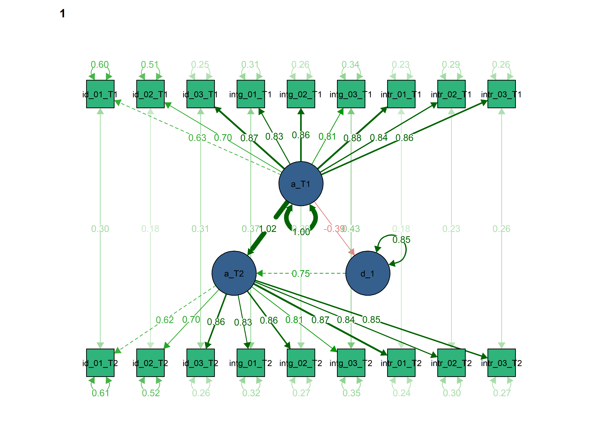
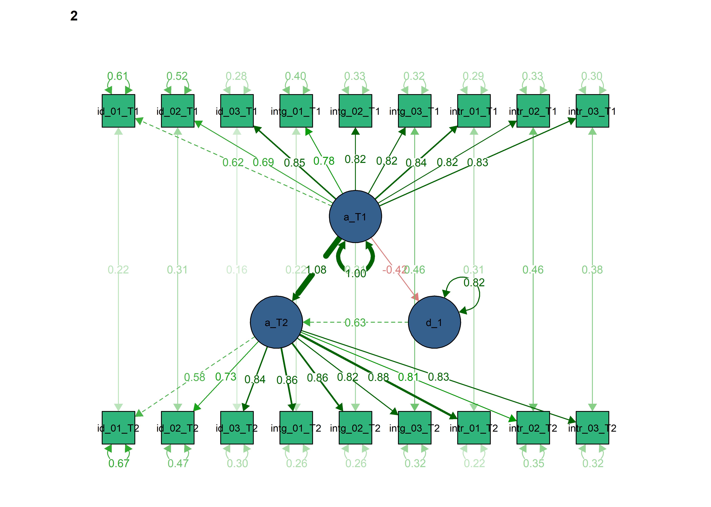
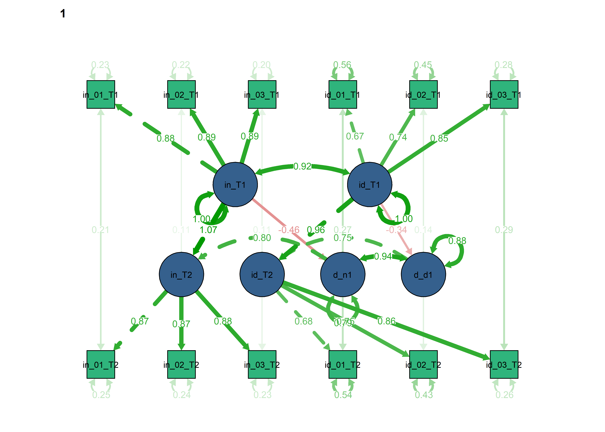
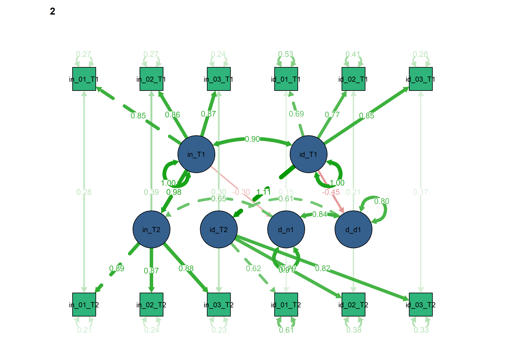
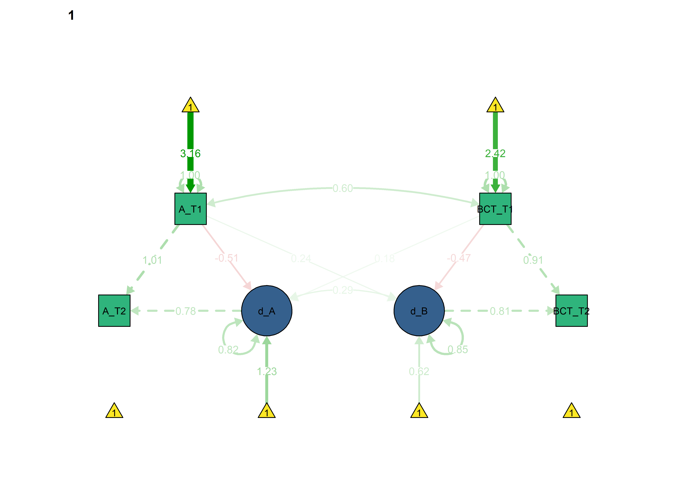
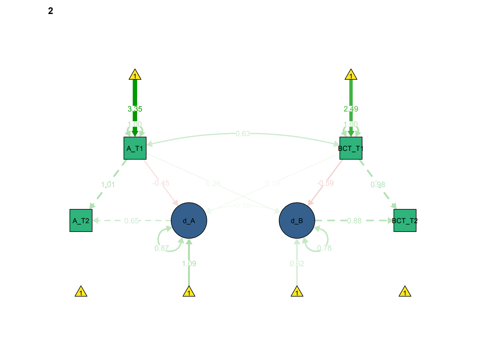
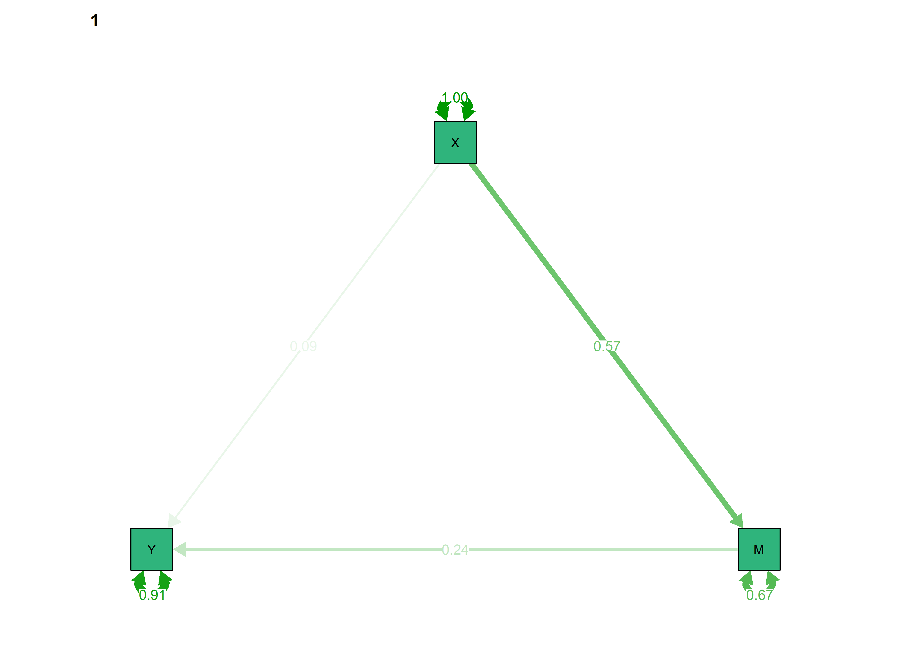
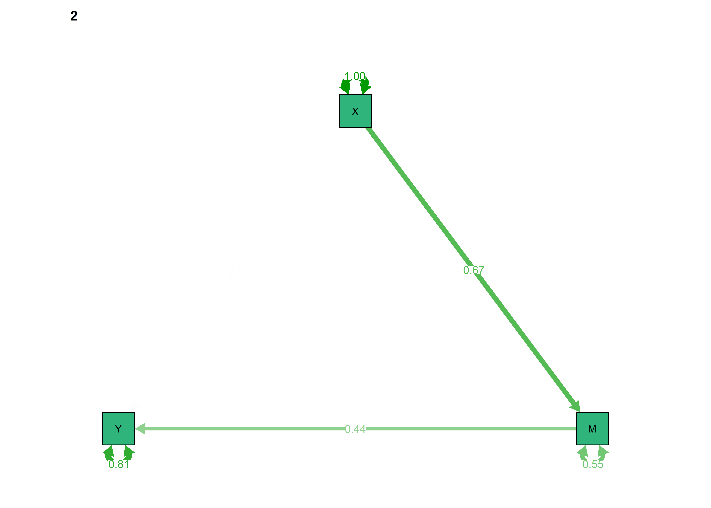

Latent change score models
source("T1_plus_T3-datasetup.R")#This script is adapted from the manuscript
#'Developmental cognitive neuroscience using Latent Change Score models: A tutorial and applications'
#Rogier A. Kievit, Andreas M. Brandmaier, Gabriel Ziegler, Anne-Laura van Harmelen,
#Susanne de Mooij, Michael Moutoussisa, Ian Goodyer, Ed Bullmore, Peter Jones,
#Peter Fonagy, NSPN Consortium, Ulman Lindenberger & Raymond J. Dolan
#The original code was written by Rogier A. Kievit (rogier.kievit@mrc-cbu.cam.ac.uk), 30 January 2017.
#It may be used, (re)shared and modified freely under a CC-BY license
#This script simulates, then saves, then fits, data for a univariate Latent Change Score model.
# Select data
data <- df %>% dplyr::select(
id,
autonomous_T1 = PA_autonomous_T1,
autonomous_T2 = PA_autonomous_T3 # In the study, there was a mid-intervention T2, but for intervention group only
)
# Fit the Univariate Latent Change Score model
ULCS <- '
autonomous_T2 ~ 1*autonomous_T1 # Fixed regression of T2 on T1
d_autonomous1 =~ 1*autonomous_T2 # Fixed regression of d_autonomous1 on autonomous_T2
autonomous_T2 ~ 0*1 # This line constrains the intercept of autonomous_T2 to 0
autonomous_T2 ~~ 0*autonomous_T2 # This fixes the variance of the autonomous_T2 to 0
d_autonomous1 ~ 1 # This estimates the intercept of the change scores
autonomous_T1 ~ 1 # This estimates the intercept of autonomous_T1
d_autonomous1 ~~ d_autonomous1 # This estimates the variance of the change scores
autonomous_T1 ~~ autonomous_T1 # This estimates the variance of autonomous_T1
d_autonomous1 ~ autonomous_T1 # This estimates the self-feedback parameter
'
fitULCS <- lavaan::lavaan(ULCS, data = data, estimator='mlr', fixed.x=FALSE, missing='fiml')
## Warning in lav_data_full(data = data, group = group, cluster = cluster, : lavaan WARNING: some cases are empty and will be ignored:
## 4 29 37 76 134 245 351 352 385 493 494 495 623 722 772 774 782 787 791 792 921 967 1112
lavaan::summary(fitULCS, fit.measures = TRUE, standardized = TRUE, rsquare = TRUE)
## lavaan (0.5-23.1097) converged normally after 20 iterations
##
## Used Total
## Number of observations 1142 1165
##
## Number of missing patterns 3
##
## Estimator ML Robust
## Minimum Function Test Statistic 0.000 0.000
## Degrees of freedom 0 0
## Scaling correction factor NA
## for the Yuan-Bentler correction
##
## Model test baseline model:
##
## Minimum Function Test Statistic 698.523 294.613
## Degrees of freedom 1 1
## P-value 0.000 0.000
##
## User model versus baseline model:
##
## Comparative Fit Index (CFI) 1.000 1.000
## Tucker-Lewis Index (TLI) 1.000 1.000
##
## Robust Comparative Fit Index (CFI) 1.000
## Robust Tucker-Lewis Index (TLI) 1.000
##
## Loglikelihood and Information Criteria:
##
## Loglikelihood user model (H0) -2602.254 -2602.254
## Loglikelihood unrestricted model (H1) -2602.254 -2602.254
##
## Number of free parameters 5 5
## Akaike (AIC) 5214.508 5214.508
## Bayesian (BIC) 5239.711 5239.711
## Sample-size adjusted Bayesian (BIC) 5223.829 5223.829
##
## Root Mean Square Error of Approximation:
##
## RMSEA 0.000 0.000
## 90 Percent Confidence Interval 0.000 0.000 0.000 0.000
## P-value RMSEA <= 0.05 NA NA
##
## Robust RMSEA 0.000
## 90 Percent Confidence Interval 0.000 0.000
##
## Standardized Root Mean Square Residual:
##
## SRMR 0.000 0.000
##
## Parameter Estimates:
##
## Information Observed
## Standard Errors Robust.huber.white
##
## Latent Variables:
## Estimate Std.Err z-value P(>|z|) Std.lv Std.all
## d_autonomous1 =~
## autonomous_T2 1.000 0.751 0.716
##
## Regressions:
## Estimate Std.Err z-value P(>|z|) Std.lv Std.all
## autonomous_T2 ~
## autonomous_T1 1.000 1.000 1.006
## d_autonomous1 ~
## autonomous_T1 -0.260 0.024 -10.819 0.000 -0.346 -0.364
##
## Intercepts:
## Estimate Std.Err z-value P(>|z|) Std.lv Std.all
## .autonomous_T2 0.000 0.000 0.000
## .d_autonomous1 0.919 0.087 10.619 0.000 1.224 1.224
## autonomous_T1 3.402 0.032 107.453 0.000 3.402 3.225
##
## Variances:
## Estimate Std.Err z-value P(>|z|) Std.lv Std.all
## .autonomous_T2 0.000 0.000 0.000
## .d_autonomous1 0.489 0.033 14.768 0.000 0.867 0.867
## autonomous_T1 1.112 0.039 28.594 0.000 1.112 1.000
##
## R-Square:
## Estimate
## autonomous_T2 1.000
## d_autonomous1 0.133
lavaan::coef(fitULCS)
## d_autonomous1~1 autonomous_T1~1
## 0.919 3.402
## d_autonomous1~~d_autonomous1 autonomous_T1~~autonomous_T1
## 0.489 1.112
## d_autonomous1~autonomous_T1
## -0.260
# Plot raw scores
df %>% dplyr::select(
id,
intervention,
T1 = PA_autonomous_T1,
T2 = PA_autonomous_T3 # In the study, there was a mid-intervention T2, but for intervention group only
) %>%
mutate(intervention = factor(intervention, labels = c("Control group", "Intervention group"))) %>%
gather(variable, value, -id, -intervention) %>%
na.omit(.) %>%
ggplot(aes(variable, value, group=id)) +
geom_point(col = 'dodgerblue', size = 3, alpha = .2) +
geom_line(col = 'dodgerblue', alpha = .2) +
ggtitle('Univariate Latent Change Score model') +
ylab('Autonomous motivation scores') +
xlab('Time points') +
facet_wrap("intervention")
# Plot the SEM model
semPlot::semPaths(fitULCS, "std", edge.label.cex = 1, curvePivot = TRUE, layout = "tree",
color = list(lat = viridis::viridis(3, begin = 0.3)[1],
man = viridis::viridis(3, begin = 0.3)[2],
int = viridis::viridis(3, begin = 0.3)[3]))
# Fit model with variance of change constrained at zero, leads to a non positive definite covariance matrix.
# ULCS_d0 <- '
# autonomous_T2 ~ 1*autonomous_T1 # Fixed regression of T2 on T1
# d_autonomous1 =~ 1*autonomous_T2 # Fixed regression of d_autonomous1 on autonomous_T2
# autonomous_T2 ~ 0*1 # This line constrains the intercept of autonomous_T2 to 0
# autonomous_T2 ~~ 0*autonomous_T2 # This fixes the variance of the autonomous_T2 to 0
#
# d_autonomous1 ~ 1 # This estimates the intercept of the change scores
# autonomous_T1 ~ 1 # This estimates the intercept of autonomous_T1
# d_autonomous1 ~~ 0*d_autonomous1 # NOW ZERO - This estimates the variance of the change scores
# autonomous_T1 ~~ autonomous_T1 # This estimates the variance of autonomous_T1
# d_autonomous1 ~ autonomous_T1 # This estimates the self-feedback parameter
# '
#
# fitULCS_d0 <- lavaan::lavaan(ULCS_d0, data = data, estimator='mlr', fixed.x=FALSE, missing='fiml')
# lavaan::summary(fitULCS_d0, fit.measures = TRUE, standardized = TRUE, rsquare = TRUE)We can observe, that high starting scores on autonomous motivation lead to smaller changes and vice versa, understandably due to ceiling effects in the data. The intercept for change is positive, so there was a general trend of increasing scores on the measure.
How to interpret the path from d_1 to a_T2?
Multiple indicators for automous
Plot raw scores
drawit <- function(regulation) {
pd <- position_dodge(0.4) # see: https://stackoverflow.com/questions/39533456/r-how-to-jitter-both-geom-line-and-geom-point-in-ggplot2-linegraph
# Show change scores; see https://stackoverflow.com/questions/50181772/line-color-and-width-by-slope-in-ggplot2
data_MILCS %>%
dplyr::mutate(intervention = factor(intervention, labels = c("Control group", "Intervention group"))) %>%
tidyr::gather(variable, value, -id, -girl, -intervention) %>%
tidyr::separate(variable, c("item", "time"), sep = "_T") %>%
dplyr::mutate(value = jitter(value, amount = 0.1)) %>% # Y-axis jitter to make points more readable
group_by(id, item) %>%
mutate(slope = (value[time==2] - value[time==1])/(2-1)) %>%
dplyr::filter(stringr::str_detect(item, regulation)) %>% # Search the variable "item" for string given by the regulation (e.g. "intrinsic") and keep only those
# dplyr::filter(intervention == intervention_allocation) %>%
na.omit(.) %>%
ggplot(aes(x = time, y = value, group = id)) +
geom_point(size = 1, alpha = .2, position = pd) +
geom_line(aes(color = slope), alpha = .2, size = 1.5, position = pd) +
scale_color_viridis_c(option = "inferno") +
# ggtitle(paste0('Multiple indicator LCS model: ', regulation)) +
ylab(paste0(regulation, ' regulation scores')) +
xlab('Time points') +
facet_wrap(c("intervention", "item"), nrow = 2) +
theme(legend.position="none",
strip.text = element_blank(), # comment out to show labels; https://stackoverflow.com/questions/32426951/in-ggplot2-and-facet-wrap-how-to-remove-all-margins-and-padding-yet-keep-strip
plot.caption = element_text(size = 8, hjust = 0)) +
labs(caption = "Top row for control group, lower row for intervention. Items in columns ordered from left to right, starting with 1.")
}
drawit("intrinsic")
## Error in eval(lhs, parent, parent): object 'data_MILCS' not found
# To plot all of the regulations in 6-panel plots:
for (i in c("integrated", "identified", "intrinsic")) {
print(drawit(regulation = i))
}
## Error in eval(lhs, parent, parent): object 'data_MILCS' not found
# For single-item comparison between intervention and control:
for (i in c("integrated", "identified", "intrinsic")) {
for (j in c(1:3)) {
print(drawit(regulation = paste0(i, "_0", j)))
}}
## Error in eval(lhs, parent, parent): object 'data_MILCS' not found# Select data
data_MILCS <- df %>% dplyr::select(
id,
girl,
intervention,
PA_amotivation_02_T1,
PA_amotivation_01_T1,
PA_amotivation_03_T1,
PA_amotivation_04_T1,
PA_extrinsic_01_T1,
PA_extrinsic_02_T1,
PA_extrinsic_03_T1,
PA_introjected_01_T1,
PA_introjected_02_T1,
PA_identified_01_T1,
PA_identified_02_T1,
PA_identified_03_T1,
PA_integrated_01_T1,
PA_integrated_02_T1,
PA_integrated_03_T1,
PA_intrinsic_01_T1,
PA_intrinsic_02_T1,
PA_intrinsic_03_T1,
PA_amotivation_02_T3,
PA_amotivation_01_T3,
PA_amotivation_03_T3,
PA_amotivation_04_T3,
PA_extrinsic_01_T3,
PA_extrinsic_02_T3,
PA_extrinsic_03_T3,
PA_introjected_01_T3,
PA_introjected_02_T3,
PA_identified_01_T3,
PA_identified_02_T3,
PA_identified_03_T3,
PA_integrated_01_T3,
PA_integrated_02_T3,
PA_integrated_03_T3,
PA_intrinsic_01_T3,
PA_intrinsic_02_T3,
PA_intrinsic_03_T3
)
# Remove "PA_" from variable names for nicer plotting:
names(data_MILCS) <- gsub("PA_", "", names(data_MILCS))
# Change "_T3" to "_T2" for clarity
names(data_MILCS) <- gsub("_T3", "_T2", names(data_MILCS))
MILCS <- '
# This specifies the measurement model for autonomous_T1:
autonomous_T1 =~ 1 * identified_01_T1 + identified_02_T1 + identified_03_T1 +
integrated_01_T1 + integrated_02_T1 + integrated_03_T1 +
intrinsic_01_T1 + intrinsic_02_T1 + intrinsic_03_T1
# This specifies the measurement model for autonomous_T2 with the equality constrained factor loadings:
autonomous_T2 =~ 1 * identified_01_T2 +
equal("autonomous_T1 =~ identified_02_T1") * identified_02_T2 +
equal("autonomous_T1 =~ identified_03_T1") * identified_03_T2 +
equal("autonomous_T1 =~ integrated_01_T1") * integrated_01_T2 +
equal("autonomous_T1 =~ integrated_02_T1") * integrated_02_T2 +
equal("autonomous_T1 =~ integrated_03_T1") * integrated_03_T2 +
equal("autonomous_T1 =~ intrinsic_01_T1") * intrinsic_01_T2 +
equal("autonomous_T1 =~ intrinsic_02_T1") * intrinsic_02_T2 +
equal("autonomous_T1 =~ intrinsic_03_T1") * intrinsic_03_T2
autonomous_T2 ~ 1*autonomous_T1 # Fixed regression of autonomous_T2 on autonomous_T1
d_aut1 =~ 1*autonomous_T2 # Fixed regression of d_aut1 on autonomous_T2
autonomous_T2 ~ 0*1 # This line constrains the intercept of autonomous_T2 to 0
autonomous_T2 ~~ 0*autonomous_T2 # This fixes the variance of the autonomous_T2 to 0
d_aut1 ~ 1 # This estimates the intercept of the change score
autonomous_T1 ~ 1 # This estimates the intercept of autonomous_T1
d_aut1 ~~ d_aut1 # This estimates the variance of the change scores
autonomous_T1 ~~ autonomous_T1 # This estimates the variance of the autonomous_T1
d_aut1 ~ autonomous_T1 # This estimates the self-feedback parameter
# This allows residual variances on indicators:
identified_01_T1 ~~ identified_01_T1
identified_02_T1 ~~ identified_02_T1
identified_03_T1 ~~ identified_03_T1
integrated_01_T1 ~~ integrated_01_T1
integrated_02_T1 ~~ integrated_02_T1
integrated_03_T1 ~~ integrated_03_T1
intrinsic_01_T1 ~~ intrinsic_01_T1
intrinsic_02_T1 ~~ intrinsic_02_T1
intrinsic_03_T1 ~~ intrinsic_03_T1
# This allows residual covariances across of a single indicator across T1 and T2
identified_01_T1 ~~ identified_01_T2
identified_02_T1 ~~ identified_02_T2
identified_03_T1 ~~ identified_03_T2
integrated_01_T1 ~~ integrated_01_T2
integrated_02_T1 ~~ integrated_02_T2
integrated_03_T1 ~~ integrated_03_T2
intrinsic_01_T1 ~~ intrinsic_01_T2
intrinsic_02_T1 ~~ intrinsic_02_T2
intrinsic_03_T1 ~~ intrinsic_03_T2
# This allows residual variance on indicators at T2
identified_01_T2 ~~ equal("identified_01_T1 ~~ identified_01_T1") * identified_01_T2
identified_02_T2 ~~ equal("identified_02_T1 ~~ identified_02_T1") * identified_02_T2
identified_03_T2 ~~ equal("identified_03_T1 ~~ identified_03_T1") * identified_03_T2
integrated_01_T2 ~~ equal("integrated_01_T1 ~~ integrated_01_T1") * integrated_01_T2
integrated_02_T2 ~~ equal("integrated_02_T1 ~~ integrated_02_T1") * integrated_02_T2
integrated_03_T2 ~~ equal("integrated_03_T1 ~~ integrated_03_T1") * integrated_03_T2
intrinsic_01_T2 ~~ equal("intrinsic_01_T1 ~~ intrinsic_01_T1") * intrinsic_01_T2
intrinsic_02_T2 ~~ equal("intrinsic_02_T1 ~~ intrinsic_02_T1") * intrinsic_02_T2
intrinsic_03_T2 ~~ equal("intrinsic_03_T1 ~~ intrinsic_03_T1") * intrinsic_03_T2
# This constrains the first intercept of indicator to 0 at T1, estimates others
identified_01_T1 ~ 0*1
identified_02_T1 ~ 1
identified_03_T1 ~ 1
integrated_01_T1 ~ 1
integrated_02_T1 ~ 1
integrated_03_T1 ~ 1
intrinsic_01_T1 ~ 1
intrinsic_02_T1 ~ 1
intrinsic_03_T1 ~ 1
# Same with t2, except the value is predicted by the intercept of the previous time point
identified_01_T2 ~ 0 * 1
identified_02_T2 ~ equal("identified_02_T1 ~ 1") * 1
identified_03_T2 ~ equal("identified_03_T1 ~ 1") * 1
integrated_01_T2 ~ equal("integrated_01_T1 ~ 1") * 1
integrated_02_T2 ~ equal("integrated_02_T1 ~ 1") * 1
integrated_03_T2 ~ equal("integrated_03_T1 ~ 1") * 1
intrinsic_01_T2 ~ equal("intrinsic_01_T1 ~ 1") * 1
intrinsic_02_T2 ~ equal("intrinsic_02_T1 ~ 1") * 1
intrinsic_03_T2 ~ equal("intrinsic_03_T1 ~ 1") * 1
'
fitMILCS <- lavaan::lavaan(MILCS,
data = data_MILCS,
group = 'intervention',
estimator='mlr',
fixed.x = FALSE,
missing='fiml')
## Warning in lav_data_full(data = data, group = group, cluster = cluster, : lavaan WARNING: group variable 'intervention' contains missing values
## Warning in lav_data_full(data = data, group = group, cluster = cluster, : lavaan WARNING: some cases are empty and will be ignored:
## 86
lavaan::summary(fitMILCS, fit.measures=TRUE, standardized=TRUE, rsquare=TRUE)
## lavaan (0.5-23.1097) converged normally after 139 iterations
##
## Number of observations per group
## 1 581
## 0 502
##
## Number of missing patterns per group
## 1 35
## 0 26
##
## Estimator ML Robust
## Minimum Function Test Statistic 1602.260 1190.227
## Degrees of freedom 275 275
## P-value (Chi-square) 0.000 0.000
## Scaling correction factor 1.346
## for the Yuan-Bentler correction
##
## Chi-square for each group:
##
## 1 876.545 651.134
## 0 725.716 539.092
##
## Model test baseline model:
##
## Minimum Function Test Statistic 16165.936 11024.645
## Degrees of freedom 306 306
## P-value 0.000 0.000
##
## User model versus baseline model:
##
## Comparative Fit Index (CFI) 0.916 0.915
## Tucker-Lewis Index (TLI) 0.907 0.905
##
## Robust Comparative Fit Index (CFI) 0.922
## Robust Tucker-Lewis Index (TLI) 0.913
##
## Loglikelihood and Information Criteria:
##
## Loglikelihood user model (H0) NA NA
## Scaling correction factor 1.070
## for the MLR correction
## Loglikelihood unrestricted model (H1) NA NA
## Scaling correction factor 1.342
## for the MLR correction
##
## Number of free parameters 103 103
## Akaike (AIC) NA NA
## Bayesian (BIC) NA NA
##
## Root Mean Square Error of Approximation:
##
## RMSEA 0.094 0.078
## 90 Percent Confidence Interval 0.090 0.099 0.074 0.082
## P-value RMSEA <= 0.05 0.000 0.000
##
## Robust RMSEA 0.091
## 90 Percent Confidence Interval 0.086 0.096
##
## Standardized Root Mean Square Residual:
##
## SRMR 0.047 0.047
##
## Parameter Estimates:
##
## Information Observed
## Standard Errors Robust.huber.white
##
##
## Group 1 [1]:
##
## Latent Variables:
## Estimate Std.Err z-value P(>|z|)
## autonomous_T1 =~
## 1.000
## (.p2.) 1.082 0.048 22.545 0.000
## (.p3.) 1.337 0.065 20.516 0.000
## (.p4.) 1.293 0.064 20.054 0.000
## (.p5.) 1.328 0.068 19.522 0.000
## (.p6.) 1.309 0.071 18.558 0.000
## (.p7.) 1.294 0.064 20.062 0.000
## (.p8.) 1.214 0.067 18.096 0.000
## (.p9.) 1.291 0.071 18.277 0.000
## autonomous_T2 =~
## 1.000
## (atnms_T1=~d_02_T1) 1.082 0.048 22.545 0.000
## (atnms_T1=~d_03_T1) 1.337 0.065 20.516 0.000
## (atnms_T1=~ntg_01_T1) 1.293 0.064 20.054 0.000
## (atnms_T1=~ntg_02_T1) 1.328 0.068 19.522 0.000
## (atnms_T1=~ntg_03_T1) 1.309 0.071 18.558 0.000
## (atnms_T1=~ntr_01_T1) 1.294 0.064 20.062 0.000
## (atnms_T1=~ntr_02_T1) 1.214 0.067 18.096 0.000
## (atnms_T1=~ntr_03_T1) 1.291 0.071 18.277 0.000
## d_aut1 =~
## 1.000
## Std.lv Std.all
##
## 0.831 0.631
## 0.899 0.702
## 1.112 0.866
## 1.075 0.830
## 1.104 0.860
## 1.088 0.813
## 1.076 0.875
## 1.009 0.842
## 1.073 0.859
##
## 0.817 0.625
## 0.883 0.696
## 1.092 0.862
## 1.056 0.825
## 1.085 0.856
## 1.069 0.808
## 1.057 0.871
## 0.991 0.838
## 1.054 0.855
##
## 0.752 0.752
##
## Regressions:
## Estimate Std.Err z-value P(>|z|) Std.lv Std.all
## autonomous_T2 ~
## autonomous_T1 1.000 1.018 1.018
## d_aut1 ~
## autonomous_T1 -0.291 0.040 -7.319 0.000 -0.393 -0.393
##
## Covariances:
## Estimate Std.Err z-value P(>|z|) Std.lv
## .identified_01_T1 ~~
## .identifd_01_T2 0.316 0.066 4.784 0.000 0.316
## .identified_02_T1 ~~
## .identifd_02_T2 0.148 0.056 2.656 0.008 0.148
## .identified_03_T1 ~~
## .identifd_03_T2 0.128 0.030 4.212 0.000 0.128
## .integrated_01_T1 ~~
## .integrtd_01_T2 0.192 0.034 5.729 0.000 0.192
## .integrated_02_T1 ~~
## .integrtd_02_T2 0.124 0.030 4.072 0.000 0.124
## .integrated_03_T1 ~~
## .integrtd_03_T2 0.258 0.045 5.708 0.000 0.258
## .intrinsic_01_T1 ~~
## .intrinsc_01_T2 0.065 0.021 3.014 0.003 0.065
## .intrinsic_02_T1 ~~
## .intrinsc_02_T2 0.095 0.028 3.435 0.001 0.095
## .intrinsic_03_T1 ~~
## .intrinsc_03_T2 0.106 0.028 3.792 0.000 0.106
## Std.all
##
## 0.303
##
## 0.178
##
## 0.311
##
## 0.369
##
## 0.287
##
## 0.426
##
## 0.183
##
## 0.228
##
## 0.259
##
## Intercepts:
## Estimate Std.Err z-value P(>|z|) Std.lv Std.all
## . 0.000 0.000 0.000
## . 0.956 0.129 7.406 0.000 1.557 1.557
## 3.099 0.050 62.382 0.000 3.728 3.728
## . 0.000 0.000 0.000
## . (.56.) 0.302 0.149 2.030 0.042 0.302 0.236
## . (.57.) -0.846 0.206 -4.102 0.000 -0.846 -0.659
## . (.58.) -0.792 0.199 -3.973 0.000 -0.792 -0.612
## . (.59.) -0.865 0.209 -4.136 0.000 -0.865 -0.673
## . (.60.) -1.024 0.217 -4.717 0.000 -1.024 -0.765
## . (.61.) -0.408 0.202 -2.017 0.044 -0.408 -0.332
## . (.62.) -0.196 0.212 -0.927 0.354 -0.196 -0.164
## . (.63.) -0.573 0.222 -2.584 0.010 -0.573 -0.459
## . 0.000 0.000 0.000
## . (id_02_T1~1) 0.302 0.149 2.030 0.042 0.302 0.238
## . (id_03_T1~1) -0.846 0.206 -4.102 0.000 -0.846 -0.668
## . (intg_01_T1~1) -0.792 0.199 -3.973 0.000 -0.792 -0.619
## . (intg_02_T1~1) -0.865 0.209 -4.136 0.000 -0.865 -0.682
## . (intg_03_T1~1) -1.024 0.217 -4.717 0.000 -1.024 -0.774
## . (intr_01_T1~1) -0.408 0.202 -2.017 0.044 -0.408 -0.336
## . (intr_02_T1~1) -0.196 0.212 -0.927 0.354 -0.196 -0.166
## . (intr_03_T1~1) -0.573 0.222 -2.584 0.010 -0.573 -0.465
##
## Variances:
## Estimate Std.Err z-value P(>|z|)
## . 0.000
## . 0.319 0.044 7.320 0.000
## 0.691 0.072 9.582 0.000
## . (.28.) 1.043 0.067 15.569 0.000
## . (.29.) 0.831 0.062 13.351 0.000
## . (.30.) 0.412 0.034 12.267 0.000
## . (.31.) 0.521 0.040 13.177 0.000
## . (.32.) 0.430 0.035 12.169 0.000
## . (.33.) 0.607 0.048 12.736 0.000
## . (.34.) 0.354 0.024 14.498 0.000
## . (.35.) 0.417 0.032 13.223 0.000
## . (.36.) 0.409 0.038 10.722 0.000
## . (id_01_T1~~_01_T1) 1.043 0.067 15.569 0.000
## . (id_02_T1~~_02_T1) 0.831 0.062 13.351 0.000
## . (id_03_T1~~_03_T1) 0.412 0.034 12.267 0.000
## . (intg_01_T1~~_01_T1) 0.521 0.040 13.177 0.000
## . (intg_02_T1~~_02_T1) 0.430 0.035 12.169 0.000
## . (intg_03_T1~~_03_T1) 0.607 0.048 12.736 0.000
## . (intr_01_T1~~_01_T1) 0.354 0.024 14.498 0.000
## . (intr_02_T1~~_02_T1) 0.417 0.032 13.223 0.000
## . (intr_03_T1~~_03_T1) 0.409 0.038 10.722 0.000
## Std.lv Std.all
## 0.000 0.000
## 0.845 0.845
## 1.000 1.000
## 1.043 0.601
## 0.831 0.507
## 0.412 0.250
## 0.521 0.311
## 0.430 0.261
## 0.607 0.339
## 0.354 0.234
## 0.417 0.291
## 0.409 0.262
## 1.043 0.610
## 0.831 0.516
## 0.412 0.257
## 0.521 0.319
## 0.430 0.268
## 0.607 0.347
## 0.354 0.241
## 0.417 0.298
## 0.409 0.269
##
## R-Square:
## Estimate
## autonomous_T2 1.000
## d_aut1 0.155
## identifd_01_T1 0.399
## identifd_02_T1 0.493
## identifd_03_T1 0.750
## integrtd_01_T1 0.689
## integrtd_02_T1 0.739
## integrtd_03_T1 0.661
## intrinsc_01_T1 0.766
## intrinsc_02_T1 0.709
## intrinsc_03_T1 0.738
## identifd_01_T2 0.390
## identifd_02_T2 0.484
## identifd_03_T2 0.743
## integrtd_01_T2 0.681
## integrtd_02_T2 0.732
## integrtd_03_T2 0.653
## intrinsc_01_T2 0.759
## intrinsc_02_T2 0.702
## intrinsc_03_T2 0.731
##
##
## Group 2 [0]:
##
## Latent Variables:
## Estimate Std.Err z-value P(>|z|) Std.lv Std.all
## autonomous_T1 =~
## identifd_01_T1 1.000 0.839 0.623
## identifd_02_T1 1.016 0.066 15.486 0.000 0.852 0.690
## identifd_03_T1 1.333 0.075 17.674 0.000 1.118 0.850
## integrtd_01_T1 1.184 0.077 15.427 0.000 0.993 0.777
## integrtd_02_T1 1.245 0.080 15.516 0.000 1.045 0.818
## integrtd_03_T1 1.353 0.085 15.827 0.000 1.135 0.824
## intrinsc_01_T1 1.211 0.080 15.059 0.000 1.016 0.844
## intrinsc_02_T1 1.187 0.082 14.499 0.000 0.995 0.818
## intrinsc_03_T1 1.259 0.083 15.098 0.000 1.056 0.835
## autonomous_T2 =~
## identifd_01_T2 1.000 0.774 0.578
## identifd_02_T2 1.176 0.079 14.943 0.000 0.910 0.729
## identifd_03_T2 1.381 0.105 13.110 0.000 1.068 0.839
## integrtd_01_T2 1.361 0.100 13.591 0.000 1.053 0.858
## integrtd_02_T2 1.354 0.096 14.127 0.000 1.047 0.858
## integrtd_03_T2 1.464 0.110 13.308 0.000 1.132 0.822
## intrinsc_01_T2 1.347 0.100 13.530 0.000 1.042 0.884
## intrinsc_02_T2 1.243 0.105 11.871 0.000 0.961 0.809
## intrinsc_03_T2 1.288 0.108 11.931 0.000 0.997 0.827
## d_aut1 =~
## autonomous_T2 1.000 0.633 0.633
##
## Regressions:
## Estimate Std.Err z-value P(>|z|) Std.lv Std.all
## autonomous_T2 ~
## autonomous_T1 1.000 1.084 1.084
## d_aut1 ~
## autonomous_T1 -0.245 0.062 -3.938 0.000 -0.420 -0.420
##
## Covariances:
## Estimate Std.Err z-value P(>|z|) Std.lv
## .identified_01_T1 ~~
## .identifd_01_T2 0.258 0.084 3.066 0.002 0.258
## .identified_02_T1 ~~
## .identifd_02_T2 0.233 0.060 3.865 0.000 0.233
## .identified_03_T1 ~~
## .identifd_03_T2 0.078 0.036 2.173 0.030 0.078
## .integrated_01_T1 ~~
## .integrtd_01_T2 0.111 0.034 3.270 0.001 0.111
## .integrated_02_T1 ~~
## .integrtd_02_T2 0.145 0.039 3.696 0.000 0.145
## .integrated_03_T1 ~~
## .integrtd_03_T2 0.282 0.043 6.571 0.000 0.282
## .intrinsic_01_T1 ~~
## .intrinsc_01_T2 0.110 0.033 3.393 0.001 0.110
## .intrinsic_02_T1 ~~
## .intrinsc_02_T2 0.227 0.052 4.350 0.000 0.227
## .intrinsic_03_T1 ~~
## .intrinsc_03_T2 0.180 0.042 4.297 0.000 0.180
## Std.all
##
## 0.224
##
## 0.305
##
## 0.162
##
## 0.219
##
## 0.314
##
## 0.460
##
## 0.310
##
## 0.464
##
## 0.381
##
## Intercepts:
## Estimate Std.Err z-value P(>|z|) Std.lv Std.all
## .autonomous_T2 0.000 0.000 0.000
## .d_aut1 0.812 0.191 4.246 0.000 1.657 1.657
## autonomous_T1 3.096 0.060 51.186 0.000 3.691 3.691
## .identifd_01_T1 0.000 0.000 0.000
## .identifd_02_T1 0.621 0.206 3.020 0.003 0.621 0.503
## .identifd_03_T1 -0.688 0.217 -3.168 0.002 -0.688 -0.524
## .integrtd_01_T1 -0.264 0.222 -1.194 0.233 -0.264 -0.207
## .integrtd_02_T1 -0.534 0.230 -2.325 0.020 -0.534 -0.418
## .integrtd_03_T1 -1.029 0.253 -4.070 0.000 -1.029 -0.747
## .intrinsc_01_T1 0.051 0.249 0.203 0.839 0.051 0.042
## .intrinsc_02_T1 0.047 0.250 0.190 0.850 0.047 0.039
## .intrinsc_03_T1 -0.328 0.254 -1.290 0.197 -0.328 -0.259
## .identifd_01_T2 0.000 0.000 0.000
## .identifd_02_T2 0.088 0.231 0.379 0.705 0.088 0.070
## .identifd_03_T2 -0.917 0.319 -2.872 0.004 -0.917 -0.720
## .integrtd_01_T2 -0.858 0.306 -2.804 0.005 -0.858 -0.700
## .integrtd_02_T2 -0.868 0.292 -2.976 0.003 -0.868 -0.712
## .integrtd_03_T2 -1.400 0.337 -4.149 0.000 -1.400 -1.016
## .intrinsc_01_T2 -0.496 0.303 -1.639 0.101 -0.496 -0.421
## .intrinsc_02_T2 -0.156 0.330 -0.474 0.636 -0.156 -0.131
## .intrinsc_03_T2 -0.409 0.337 -1.214 0.225 -0.409 -0.339
##
## Variances:
## Estimate Std.Err z-value P(>|z|) Std.lv Std.all
## .autonomous_T2 0.000 0.000 0.000
## .d_aut1 0.198 0.034 5.779 0.000 0.824 0.824
## autonomous_T1 0.704 0.087 8.115 0.000 1.000 1.000
## .identifd_01_T1 1.110 0.087 12.745 0.000 1.110 0.612
## .identifd_02_T1 0.800 0.085 9.467 0.000 0.800 0.524
## .identifd_03_T1 0.478 0.047 10.143 0.000 0.478 0.277
## .integrtd_01_T1 0.646 0.066 9.743 0.000 0.646 0.396
## .integrtd_02_T1 0.541 0.052 10.376 0.000 0.541 0.331
## .integrtd_03_T1 0.611 0.053 11.498 0.000 0.611 0.322
## .intrinsc_01_T1 0.415 0.041 10.113 0.000 0.415 0.287
## .intrinsc_02_T1 0.490 0.059 8.279 0.000 0.490 0.331
## .intrinsc_03_T1 0.485 0.056 8.645 0.000 0.485 0.303
## .identifd_01_T2 1.194 0.102 11.712 0.000 1.194 0.666
## .identifd_02_T2 0.730 0.085 8.579 0.000 0.730 0.469
## .identifd_03_T2 0.481 0.064 7.506 0.000 0.481 0.297
## .integrtd_01_T2 0.396 0.039 10.046 0.000 0.396 0.263
## .integrtd_02_T2 0.391 0.048 8.138 0.000 0.391 0.263
## .integrtd_03_T2 0.617 0.060 10.254 0.000 0.617 0.325
## .intrinsc_01_T2 0.305 0.037 8.283 0.000 0.305 0.219
## .intrinsc_02_T2 0.489 0.063 7.778 0.000 0.489 0.346
## .intrinsc_03_T2 0.460 0.057 8.031 0.000 0.460 0.317
##
## R-Square:
## Estimate
## autonomous_T2 1.000
## d_aut1 0.176
## identifd_01_T1 0.388
## identifd_02_T1 0.476
## identifd_03_T1 0.723
## integrtd_01_T1 0.604
## integrtd_02_T1 0.669
## integrtd_03_T1 0.678
## intrinsc_01_T1 0.713
## intrinsc_02_T1 0.669
## intrinsc_03_T1 0.697
## identifd_01_T2 0.334
## identifd_02_T2 0.531
## identifd_03_T2 0.703
## integrtd_01_T2 0.737
## integrtd_02_T2 0.737
## integrtd_03_T2 0.675
## intrinsc_01_T2 0.781
## intrinsc_02_T2 0.654
## intrinsc_03_T2 0.683
lavaan::coef(fitMILCS)
## .p2.
## 1.082
## .p3.
## 1.337
## .p4.
## 1.293
## .p5.
## 1.328
## .p6.
## 1.309
## .p7.
## 1.294
## .p8.
## 1.214
## .p9.
## 1.291
## autonomous_T1=~identified_02_T1
## 1.082
## autonomous_T1=~identified_03_T1
## 1.337
## autonomous_T1=~integrated_01_T1
## 1.293
## autonomous_T1=~integrated_02_T1
## 1.328
## autonomous_T1=~integrated_03_T1
## 1.309
## autonomous_T1=~intrinsic_01_T1
## 1.294
## autonomous_T1=~intrinsic_02_T1
## 1.214
## autonomous_T1=~intrinsic_03_T1
## 1.291
## d_aut1~1
## 0.956
## autonomous_T1~1
## 3.099
## d_aut1~~d_aut1
## 0.319
## autonomous_T1~~autonomous_T1
## 0.691
## d_aut1~autonomous_T1
## -0.291
## .p28.
## 1.043
## .p29.
## 0.831
## .p30.
## 0.412
## .p31.
## 0.521
## .p32.
## 0.430
## .p33.
## 0.607
## .p34.
## 0.354
## .p35.
## 0.417
## .p36.
## 0.409
## identified_01_T1~~identified_01_T2
## 0.316
## identified_02_T1~~identified_02_T2
## 0.148
## identified_03_T1~~identified_03_T2
## 0.128
## integrated_01_T1~~integrated_01_T2
## 0.192
## integrated_02_T1~~integrated_02_T2
## 0.124
## integrated_03_T1~~integrated_03_T2
## 0.258
## intrinsic_01_T1~~intrinsic_01_T2
## 0.065
## intrinsic_02_T1~~intrinsic_02_T2
## 0.095
## intrinsic_03_T1~~intrinsic_03_T2
## 0.106
## identified_01_T1~~identified_01_T1
## 1.043
## identified_02_T1~~identified_02_T1
## 0.831
## identified_03_T1~~identified_03_T1
## 0.412
## integrated_01_T1~~integrated_01_T1
## 0.521
## integrated_02_T1~~integrated_02_T1
## 0.430
## integrated_03_T1~~integrated_03_T1
## 0.607
## intrinsic_01_T1~~intrinsic_01_T1
## 0.354
## intrinsic_02_T1~~intrinsic_02_T1
## 0.417
## intrinsic_03_T1~~intrinsic_03_T1
## 0.409
## .p56.
## 0.302
## .p57.
## -0.846
## .p58.
## -0.792
## .p59.
## -0.865
## .p60.
## -1.024
## .p61.
## -0.408
## .p62.
## -0.196
## .p63.
## -0.573
## identified_02_T1~1
## 0.302
## identified_03_T1~1
## -0.846
## integrated_01_T1~1
## -0.792
## integrated_02_T1~1
## -0.865
## integrated_03_T1~1
## -1.024
## intrinsic_01_T1~1
## -0.408
## intrinsic_02_T1~1
## -0.196
## intrinsic_03_T1~1
## -0.573
## autonomous_T1=~identified_02_T1.g2
## 1.016
## autonomous_T1=~identified_03_T1.g2
## 1.333
## autonomous_T1=~integrated_01_T1.g2
## 1.184
## autonomous_T1=~integrated_02_T1.g2
## 1.245
## autonomous_T1=~integrated_03_T1.g2
## 1.353
## autonomous_T1=~intrinsic_01_T1.g2
## 1.211
## autonomous_T1=~intrinsic_02_T1.g2
## 1.187
## autonomous_T1=~intrinsic_03_T1.g2
## 1.259
## autonomous_T2=~identified_02_T2.g2
## 1.176
## autonomous_T2=~identified_03_T2.g2
## 1.381
## autonomous_T2=~integrated_01_T2.g2
## 1.361
## autonomous_T2=~integrated_02_T2.g2
## 1.354
## autonomous_T2=~integrated_03_T2.g2
## 1.464
## autonomous_T2=~intrinsic_01_T2.g2
## 1.347
## autonomous_T2=~intrinsic_02_T2.g2
## 1.243
## autonomous_T2=~intrinsic_03_T2.g2
## 1.288
## d_aut1~1.g2
## 0.812
## autonomous_T1~1.g2
## 3.096
## d_aut1~~d_aut1.g2
## 0.198
## autonomous_T1~~autonomous_T1.g2
## 0.704
## d_aut1~autonomous_T1.g2
## -0.245
## identified_01_T1~~identified_01_T1.g2
## 1.110
## identified_02_T1~~identified_02_T1.g2
## 0.800
## identified_03_T1~~identified_03_T1.g2
## 0.478
## integrated_01_T1~~integrated_01_T1.g2
## 0.646
## integrated_02_T1~~integrated_02_T1.g2
## 0.541
## integrated_03_T1~~integrated_03_T1.g2
## 0.611
## intrinsic_01_T1~~intrinsic_01_T1.g2
## 0.415
## intrinsic_02_T1~~intrinsic_02_T1.g2
## 0.490
## intrinsic_03_T1~~intrinsic_03_T1.g2
## 0.485
## identified_01_T1~~identified_01_T2.g2
## 0.258
## identified_02_T1~~identified_02_T2.g2
## 0.233
## identified_03_T1~~identified_03_T2.g2
## 0.078
## integrated_01_T1~~integrated_01_T2.g2
## 0.111
## integrated_02_T1~~integrated_02_T2.g2
## 0.145
## integrated_03_T1~~integrated_03_T2.g2
## 0.282
## intrinsic_01_T1~~intrinsic_01_T2.g2
## 0.110
## intrinsic_02_T1~~intrinsic_02_T2.g2
## 0.227
## intrinsic_03_T1~~intrinsic_03_T2.g2
## 0.180
## identified_01_T2~~identified_01_T2.g2
## 1.194
## identified_02_T2~~identified_02_T2.g2
## 0.730
## identified_03_T2~~identified_03_T2.g2
## 0.481
## integrated_01_T2~~integrated_01_T2.g2
## 0.396
## integrated_02_T2~~integrated_02_T2.g2
## 0.391
## integrated_03_T2~~integrated_03_T2.g2
## 0.617
## intrinsic_01_T2~~intrinsic_01_T2.g2
## 0.305
## intrinsic_02_T2~~intrinsic_02_T2.g2
## 0.489
## intrinsic_03_T2~~intrinsic_03_T2.g2
## 0.460
## identified_02_T1~1.g2
## 0.621
## identified_03_T1~1.g2
## -0.688
## integrated_01_T1~1.g2
## -0.264
## integrated_02_T1~1.g2
## -0.534
## integrated_03_T1~1.g2
## -1.029
## intrinsic_01_T1~1.g2
## 0.051
## intrinsic_02_T1~1.g2
## 0.047
## intrinsic_03_T1~1.g2
## -0.328
## identified_02_T2~1.g2
## 0.088
## identified_03_T2~1.g2
## -0.917
## integrated_01_T2~1.g2
## -0.858
## integrated_02_T2~1.g2
## -0.868
## integrated_03_T2~1.g2
## -1.400
## intrinsic_01_T2~1.g2
## -0.496
## intrinsic_02_T2~1.g2
## -0.156
## intrinsic_03_T2~1.g2
## -0.409
# Plot the SEM model
# Plot the SEM model
semPlot::semPaths(fitMILCS,
what = "std",
ask = FALSE,
label.cex = .6,
label.scale = FALSE,
edge.label.cex = 0.75,
layout = "tree",
intercepts = FALSE,
color = list(lat = viridis::viridis(3, begin = 0.3)[1],
man = viridis::viridis(3, begin = 0.3)[2],
int = viridis::viridis(3, begin = 0.3)[3]))
# Plot raw scores
drawit <- function(regulation) {
pd <- position_dodge(0.4) # see: https://stackoverflow.com/questions/39533456/r-how-to-jitter-both-geom-line-and-geom-point-in-ggplot2-linegraph
# Show change scores; see https://stackoverflow.com/questions/50181772/line-color-and-width-by-slope-in-ggplot2
data_MILCS %>%
dplyr::mutate(intervention = factor(intervention, labels = c("Control group", "Intervention group"))) %>%
tidyr::gather(variable, value, -id, -girl, -intervention) %>%
tidyr::separate(variable, c("item", "time"), sep = "_T") %>%
dplyr::mutate(value = jitter(value, amount = 0.1)) %>% # Y-axis jitter to make points more readable
group_by(id, item) %>%
mutate(slope = (value[time==2] - value[time==1])/(2-1)) %>%
dplyr::filter(stringr::str_detect(item, regulation)) %>% # Search the variable "item" for string given by the regulation (e.g. "intrinsic") and keep only those
# dplyr::filter(intervention == intervention_allocation) %>%
na.omit(.) %>%
ggplot(aes(x = time, y = value, group = id)) +
geom_point(size = 1, alpha = .2, position = pd) +
geom_line(aes(color = slope), alpha = .2, size = 1.5, position = pd) +
scale_color_viridis_c(option = "inferno") +
# ggtitle(paste0('Multiple indicator LCS model: ', regulation)) +
ylab(paste0(regulation, ' regulation scores')) +
xlab('Time points') +
facet_wrap(c("intervention", "item"), nrow = 2) +
theme(legend.position="none",
strip.text = element_blank(), # comment out to show labels; https://stackoverflow.com/questions/32426951/in-ggplot2-and-facet-wrap-how-to-remove-all-margins-and-padding-yet-keep-strip
plot.caption = element_text(size = 8, hjust = 0)) +
labs(caption = "Top row for control group, lower row for intervention. Items in columns ordered from left to right, starting with 1.")
}
drawit("intrinsic")
## Warning: attributes are not identical across measure variables;
## they will be dropped
## Error in if (0 <= angle & angle < 90) {: argument is of length zero
# To plot all of the regulations in 6-panel plots:
for (i in c("integrated", "identified", "intrinsic")) {
print(drawit(regulation = i))
}
## Warning: attributes are not identical across measure variables;
## they will be dropped
## Error in if (0 <= angle & angle < 90) {: argument is of length zero
# For single-item comparison between intervention and control:
for (i in c("integrated", "identified", "intrinsic")) {
for (j in c(1:3)) {
print(drawit(regulation = paste0(i, "_0", j)))
}}
## Warning: attributes are not identical across measure variables;
## they will be dropped
## Error in if (0 <= angle & angle < 90) {: argument is of length zero
# To check out observed means:
# df %>% select(intervention, contains("diff")) %>% select(intervention, matches("identified|intrinsic|integrated")) %>% group_by(intervention) %>% summarise_all(mean, na.rm = TRUE)Separate regulations
# Select data
data_MILCS <- df %>% dplyr::select(
id,
girl,
intervention,
PA_amotivation_02_T1,
PA_amotivation_01_T1,
PA_amotivation_03_T1,
PA_amotivation_04_T1,
PA_extrinsic_01_T1,
PA_extrinsic_02_T1,
PA_extrinsic_03_T1,
PA_introjected_01_T1,
PA_introjected_02_T1,
PA_identified_01_T1,
PA_identified_02_T1,
PA_identified_03_T1,
PA_integrated_01_T1,
PA_integrated_02_T1,
PA_integrated_03_T1,
PA_intrinsic_01_T1,
PA_intrinsic_02_T1,
PA_intrinsic_03_T1,
PA_amotivation_02_T3,
PA_amotivation_01_T3,
PA_amotivation_03_T3,
PA_amotivation_04_T3,
PA_extrinsic_01_T3,
PA_extrinsic_02_T3,
PA_extrinsic_03_T3,
PA_introjected_01_T3,
PA_introjected_02_T3,
PA_identified_01_T3,
PA_identified_02_T3,
PA_identified_03_T3,
PA_integrated_01_T3,
PA_integrated_02_T3,
PA_integrated_03_T3,
PA_intrinsic_01_T3,
PA_intrinsic_02_T3,
PA_intrinsic_03_T3
)
# Remove "PA_" from variable names for nicer plotting:
names(data_MILCS) <- gsub("PA_", "", names(data_MILCS))
# Change "_T3" to "_T2" for clarity
names(data_MILCS) <- gsub("_T3", "_T2", names(data_MILCS))
MILCS <- '
# This specifies the measurement models for T1:
intrinsic_T1 =~ 1 * intrinsic_01_T1 + intrinsic_02_T1 + intrinsic_03_T1
identified_T1 =~ 1 * identified_01_T1 + identified_02_T1 + identified_03_T1
#integrated_T1 =~ 1 * integrated_01_T1 + integrated_02_T1 + integrated_03_T1
# This specifies the measurement models for T2 with the equality constrained factor loadings:
intrinsic_T2 =~ 1 * intrinsic_01_T2 +
equal("intrinsic_T1 =~ intrinsic_02_T1") * intrinsic_02_T2 +
equal("intrinsic_T1 =~ intrinsic_03_T1") * intrinsic_03_T2
identified_T2 =~ 1 * identified_01_T2 +
equal("identified_T1 =~ identified_02_T1") * identified_02_T2 +
equal("identified_T1 =~ identified_03_T1") * identified_03_T2
#integrated_T2 =~ 1 * integrated_01_T2 +
# equal("integrated_T1 =~ integrated_02_T1") * integrated_02_T2 +
# equal("integrated_T1 =~ integrated_03_T1") * integrated_03_T2
intrinsic_T2 ~ 1*intrinsic_T1 # Fixed regression of intrinsic_T2 on intrinsic_T1
d_intrinsic1 =~ 1*intrinsic_T2 # Fixed regression of d_intrinsic1 on intrinsic_T2
intrinsic_T2 ~ 0*1 # This line constrains the intercept of intrinsic_T2 to 0
intrinsic_T2 ~~ 0*intrinsic_T2 # This fixes the variance of the intrinsic_T2 to 0
d_intrinsic1 ~ 1 # This estimates the intercept of the change score
intrinsic_T1 ~ 1 # This estimates the intercept of intrinsic_T1
d_intrinsic1 ~~ d_intrinsic1 # This estimates the variance of the change scores
intrinsic_T1 ~~ intrinsic_T1 # This estimates the variance of the intrinsic_T1
d_intrinsic1 ~ intrinsic_T1 # This estimates the self-feedback parameter
#integrated_T2 ~ 1*integrated_T1 # Fixed regression of integrated_T2 on integrated_T1
#d_integrated1 =~ 1*integrated_T2 # Fixed regression of d_integrated1 on integrated_T2
#integrated_T2 ~ 0*1 # This line constrains the intercept of integrated_T2 to 0
#integrated_T2 ~~ 0*integrated_T2 # This fixes the variance of the integrated_T2 to 0
#d_integrated1 ~ 1 # This estimates the intercept of the change score
#integrated_T1 ~ 1 # This estimates the intercept of integrated_T1
#d_integrated1 ~~ d_integrated1 # This estimates the variance of the change scores
#integrated_T1 ~~ integrated_T1 # This estimates the variance of the integrated_T1
#d_integrated1 ~ integrated_T1 # This estimates the self-feedback parameter
identified_T2 ~ 1*identified_T1 # Fixed regression of identified_T2 on identified_T1
d_identified1 =~ 1*identified_T2 # Fixed regression of d_identified1 on identified_T2
identified_T2 ~ 0*1 # This line constrains the intercept of identified_T2 to 0
identified_T2 ~~ 0*identified_T2 # This fixes the variance of the identified_T2 to 0
d_identified1 ~ 1 # This estimates the intercept of the change score
identified_T1 ~ 1 # This estimates the intercept of identified_T1
d_identified1 ~~ d_identified1 # This estimates the variance of the change scores
identified_T1 ~~ identified_T1 # This estimates the variance of the identified_T1
d_identified1 ~ identified_T1 # This estimates the self-feedback parameter
# This allows residual variances on indicators:
identified_01_T1 ~~ identified_01_T1
identified_02_T1 ~~ identified_02_T1
identified_03_T1 ~~ identified_03_T1
#integrated_01_T1 ~~ integrated_01_T1
#integrated_02_T1 ~~ integrated_02_T1
#integrated_03_T1 ~~ integrated_03_T1
intrinsic_01_T1 ~~ intrinsic_01_T1
intrinsic_02_T1 ~~ intrinsic_02_T1
intrinsic_03_T1 ~~ intrinsic_03_T1
# This allows residual covariances across of a single indicator across T1 and T2
identified_01_T1 ~~ identified_01_T2
identified_02_T1 ~~ identified_02_T2
identified_03_T1 ~~ identified_03_T2
#integrated_01_T1 ~~ integrated_01_T2
#integrated_02_T1 ~~ integrated_02_T2
#integrated_03_T1 ~~ integrated_03_T2
intrinsic_01_T1 ~~ intrinsic_01_T2
intrinsic_02_T1 ~~ intrinsic_02_T2
intrinsic_03_T1 ~~ intrinsic_03_T2
# This allows residual variance on indicators at T2
identified_01_T2 ~~ equal("identified_01_T1 ~~ identified_01_T1") * identified_01_T2
identified_02_T2 ~~ equal("identified_02_T1 ~~ identified_02_T1") * identified_02_T2
identified_03_T2 ~~ equal("identified_03_T1 ~~ identified_03_T1") * identified_03_T2
#integrated_01_T2 ~~ equal("integrated_01_T1 ~~ integrated_01_T1") * integrated_01_T2
#integrated_02_T2 ~~ equal("integrated_02_T1 ~~ integrated_02_T1") * integrated_02_T2
#integrated_03_T2 ~~ equal("integrated_03_T1 ~~ integrated_03_T1") * integrated_03_T2
intrinsic_01_T2 ~~ equal("intrinsic_01_T1 ~~ intrinsic_01_T1") * intrinsic_01_T2
intrinsic_02_T2 ~~ equal("intrinsic_02_T1 ~~ intrinsic_02_T1") * intrinsic_02_T2
intrinsic_03_T2 ~~ equal("intrinsic_03_T1 ~~ intrinsic_03_T1") * intrinsic_03_T2
# This constrains the first intercept of indicator to 0 at T1, estimates others
identified_01_T1 ~ 0*1
identified_02_T1 ~ 1
identified_03_T1 ~ 1
#integrated_01_T1 ~ 0*1
#integrated_02_T1 ~ 1
#integrated_03_T1 ~ 1
intrinsic_01_T1 ~ 0*1
intrinsic_02_T1 ~ 1
intrinsic_03_T1 ~ 1
# Same with t2, except the value is predicted by the intercept of the previous time point
identified_01_T2 ~ 0 * 1
identified_02_T2 ~ equal("identified_02_T1 ~ 1") * 1
identified_03_T2 ~ equal("identified_03_T1 ~ 1") * 1
#integrated_01_T2 ~ 0 * 1
#integrated_02_T2 ~ equal("integrated_02_T1 ~ 1") * 1
#integrated_03_T2 ~ equal("integrated_03_T1 ~ 1") * 1
intrinsic_01_T2 ~ 0 * 1
intrinsic_02_T2 ~ equal("intrinsic_02_T1 ~ 1") * 1
intrinsic_03_T2 ~ equal("intrinsic_03_T1 ~ 1") * 1
# Estimate covariance between T1 variables
#intrinsic_T1 ~~ integrated_T1
intrinsic_T1 ~~ identified_T1
#integrated_T1 ~~ identified_T1
# Estimate covariance between changes
#d_intrinsic1 ~~ d_integrated1
d_intrinsic1 ~~ d_identified1
#d_integrated1 ~~ d_identified1
'
fitMILCS_individualRegulations <- lavaan::lavaan(MILCS, data = data_MILCS, estimator='mlr', fixed.x = FALSE, missing='fiml', group='intervention')
## Warning in lav_data_full(data = data, group = group, cluster = cluster, : lavaan WARNING: group variable 'intervention' contains missing values
## Warning in lav_data_full(data = data, group = group, cluster = cluster, : lavaan WARNING: some cases are empty and will be ignored:
## 86 264
lavaan::summary(fitMILCS_individualRegulations, fit.measures=TRUE, standardized=TRUE, rsquare=TRUE)
## lavaan (0.5-23.1097) converged normally after 117 iterations
##
## Number of observations per group
## 1 581
## 0 501
##
## Number of missing patterns per group
## 1 28
## 0 20
##
## Estimator ML Robust
## Minimum Function Test Statistic 523.641 396.544
## Degrees of freedom 102 102
## P-value (Chi-square) 0.000 0.000
## Scaling correction factor 1.321
## for the Yuan-Bentler correction
##
## Chi-square for each group:
##
## 1 307.877 233.150
## 0 215.764 163.394
##
## Model test baseline model:
##
## Minimum Function Test Statistic 9117.902 5953.914
## Degrees of freedom 132 132
## P-value 0.000 0.000
##
## User model versus baseline model:
##
## Comparative Fit Index (CFI) 0.953 0.949
## Tucker-Lewis Index (TLI) 0.939 0.935
##
## Robust Comparative Fit Index (CFI) 0.956
## Robust Tucker-Lewis Index (TLI) 0.944
##
## Loglikelihood and Information Criteria:
##
## Loglikelihood user model (H0) NA NA
## Scaling correction factor 1.170
## for the MLR correction
## Loglikelihood unrestricted model (H1) NA NA
## Scaling correction factor 1.346
## for the MLR correction
##
## Number of free parameters 78 78
## Akaike (AIC) NA NA
## Bayesian (BIC) NA NA
##
## Root Mean Square Error of Approximation:
##
## RMSEA 0.087 0.073
## 90 Percent Confidence Interval 0.080 0.095 0.067 0.080
## P-value RMSEA <= 0.05 0.000 0.000
##
## Robust RMSEA 0.084
## 90 Percent Confidence Interval 0.075 0.093
##
## Standardized Root Mean Square Residual:
##
## SRMR 0.040 0.040
##
## Parameter Estimates:
##
## Information Observed
## Standard Errors Robust.huber.white
##
##
## Group 1 [1]:
##
## Latent Variables:
## Estimate Std.Err z-value P(>|z|) Std.lv
## intrinsic_T1 =~
## 1.000 1.097
## (.p2.) 0.981 0.031 31.559 0.000 1.075
## (.p3.) 1.032 0.031 33.517 0.000 1.131
## identified_T1 =~
## 1.000 0.867
## (.p5.) 1.079 0.045 24.050 0.000 0.936
## (.p6.) 1.228 0.061 20.094 0.000 1.065
## intrinsic_T2 =~
## 1.000 1.024
## (in_T1=~_02_T1) 0.981 0.031 31.559 0.000 1.004
## (in_T1=~_03_T1) 1.032 0.031 33.517 0.000 1.057
## identified_T2 =~
## 1.000 0.901
## (id_T1=~_02_T1) 1.079 0.045 24.050 0.000 0.972
## (id_T1=~_03_T1) 1.228 0.061 20.094 0.000 1.106
## d_intrinsic1 =~
## 1.000 0.796
## d_identified1 =~
## 1.000 0.751
## Std.all
##
## 0.879
## 0.885
## 0.893
##
## 0.667
## 0.742
## 0.851
##
## 0.865
## 0.871
## 0.880
##
## 0.681
## 0.755
## 0.859
##
## 0.796
##
## 0.751
##
## Regressions:
## Estimate Std.Err z-value P(>|z|) Std.lv Std.all
## intrinsic_T2 ~
## intrinsic_T1 1.000 1.071 1.071
## d_intrinsic1 ~
## intrinsic_T1 -0.340 0.042 -8.028 0.000 -0.457 -0.457
## identified_T2 ~
## identified_T1 1.000 0.963 0.963
## d_identified1 ~
## identified_T1 -0.265 0.051 -5.233 0.000 -0.340 -0.340
##
## Covariances:
## Estimate Std.Err z-value P(>|z|) Std.lv
## .identified_01_T1 ~~
## .identifd_01_T2 0.254 0.068 3.753 0.000 0.254
## .identified_02_T1 ~~
## .identifd_02_T2 0.097 0.056 1.725 0.085 0.097
## .identified_03_T1 ~~
## .identifd_03_T2 0.126 0.039 3.257 0.001 0.126
## .intrinsic_01_T1 ~~
## .intrinsc_01_T2 0.074 0.027 2.736 0.006 0.074
## .intrinsic_02_T1 ~~
## .intrinsc_02_T2 0.034 0.026 1.333 0.183 0.034
## .intrinsic_03_T1 ~~
## .intrinsc_03_T2 0.037 0.025 1.484 0.138 0.037
## intrinsic_T1 ~~
## identified_T1 0.874 0.062 14.144 0.000 0.919
## .d_intrinsic1 ~~
## .d_identified1 0.435 0.055 7.976 0.000 0.943
## Std.all
##
## 0.270
##
## 0.136
##
## 0.291
##
## 0.209
##
## 0.107
##
## 0.114
##
## 0.919
##
## 0.943
##
## Intercepts:
## Estimate Std.Err z-value P(>|z|) Std.lv Std.all
## .i 0.000 0.000 0.000
## .d 1.278 0.163 7.828 0.000 1.568 1.568
## i 3.610 0.050 71.900 0.000 3.292 3.292
## .i 0.000 0.000 0.000
## .d 0.826 0.167 4.956 0.000 1.221 1.221
## i 3.122 0.050 61.975 0.000 3.599 3.599
## .i 0.000 0.000 0.000
## .i (.50.) 0.312 0.139 2.246 0.025 0.312 0.247
## .i (.51.) -0.503 0.191 -2.633 0.008 -0.503 -0.402
## .i 0.000 0.000 0.000
## .i (.53.) 0.033 0.123 0.268 0.789 0.033 0.027
## .i (.54.) -0.291 0.119 -2.445 0.014 -0.291 -0.230
## .i 0.000 0.000 0.000
## .i (id_02_T1~1) 0.312 0.139 2.246 0.025 0.312 0.242
## .i (id_03_T1~1) -0.503 0.191 -2.633 0.008 -0.503 -0.391
## .i 0.000 0.000 0.000
## .i (in_02_T1~1) 0.033 0.123 0.268 0.789 0.033 0.029
## .i (in_03_T1~1) -0.291 0.119 -2.445 0.014 -0.291 -0.243
##
## Variances:
## Estimate Std.Err z-value P(>|z|) Std.lv
## . 0.000 0.000
## . 0.525 0.070 7.481 0.000 0.791
## 1.202 0.076 15.922 0.000 1.000
## . 0.000 0.000
## . 0.405 0.061 6.666 0.000 0.885
## 0.752 0.075 9.986 0.000 1.000
## . (.31.) 0.941 0.072 13.113 0.000 0.941
## . (.32.) 0.714 0.064 11.189 0.000 0.714
## . (.33.) 0.433 0.039 11.018 0.000 0.433
## . (.34.) 0.353 0.032 11.029 0.000 0.353
## . (.35.) 0.320 0.033 9.595 0.000 0.320
## . (.36.) 0.325 0.039 8.394 0.000 0.325
## . (id_01_T1~~_01_T1) 0.941 0.072 13.113 0.000 0.941
## . (id_02_T1~~_02_T1) 0.714 0.064 11.189 0.000 0.714
## . (id_03_T1~~_03_T1) 0.433 0.039 11.018 0.000 0.433
## . (in_01_T1~~_01_T1) 0.353 0.032 11.029 0.000 0.353
## . (in_02_T1~~_02_T1) 0.320 0.033 9.595 0.000 0.320
## . (in_03_T1~~_03_T1) 0.325 0.039 8.394 0.000 0.325
## Std.all
## 0.000
## 0.791
## 1.000
## 0.000
## 0.885
## 1.000
## 0.556
## 0.449
## 0.276
## 0.227
## 0.217
## 0.202
## 0.537
## 0.430
## 0.262
## 0.252
## 0.241
## 0.225
##
## R-Square:
## Estimate
## intrinsic_T2 1.000
## d_intrinsic1 0.209
## identified_T2 1.000
## d_identified1 0.115
## identifd_01_T1 0.444
## identifd_02_T1 0.551
## identifd_03_T1 0.724
## intrinsc_01_T1 0.773
## intrinsc_02_T1 0.783
## intrinsc_03_T1 0.798
## identifd_01_T2 0.463
## identifd_02_T2 0.570
## identifd_03_T2 0.738
## intrinsc_01_T2 0.748
## intrinsc_02_T2 0.759
## intrinsc_03_T2 0.775
##
##
## Group 2 [0]:
##
## Latent Variables:
## Estimate Std.Err z-value P(>|z|) Std.lv Std.all
## intrinsic_T1 =~
## intrinsc_01_T1 1.000 1.020 0.853
## intrinsc_02_T1 1.019 0.038 26.658 0.000 1.039 0.856
## intrinsc_03_T1 1.078 0.040 27.020 0.000 1.100 0.871
## identified_T1 =~
## identifd_01_T1 1.000 0.925 0.687
## identifd_02_T1 1.029 0.059 17.468 0.000 0.952 0.768
## identifd_03_T1 1.213 0.068 17.807 0.000 1.122 0.851
## intrinsic_T2 =~
## intrinsc_01_T2 1.000 1.040 0.890
## intrinsc_02_T2 0.987 0.044 22.630 0.000 1.026 0.873
## intrinsc_03_T2 1.008 0.051 19.932 0.000 1.048 0.877
## identified_T2 =~
## identifd_01_T2 1.000 0.829 0.621
## identifd_02_T2 1.187 0.075 15.770 0.000 0.984 0.788
## identifd_03_T2 1.249 0.110 11.325 0.000 1.036 0.819
## d_intrinsic1 =~
## intrinsic_T2 1.000 0.647 0.647
## d_identified1 =~
## identified_T2 1.000 0.606 0.606
##
## Regressions:
## Estimate Std.Err z-value P(>|z|) Std.lv Std.all
## intrinsic_T2 ~
## intrinsic_T1 1.000 0.981 0.981
## d_intrinsic1 ~
## intrinsic_T1 -0.198 0.042 -4.707 0.000 -0.300 -0.300
## identified_T2 ~
## identified_T1 1.000 1.115 1.115
## d_identified1 ~
## identified_T1 -0.245 0.062 -3.931 0.000 -0.452 -0.452
##
## Covariances:
## Estimate Std.Err z-value P(>|z|) Std.lv
## .identified_01_T1 ~~
## .identifd_01_T2 0.157 0.083 1.904 0.057 0.157
## .identified_02_T1 ~~
## .identifd_02_T2 0.131 0.050 2.611 0.009 0.131
## .identified_03_T1 ~~
## .identifd_03_T2 0.087 0.052 1.661 0.097 0.087
## .intrinsic_01_T1 ~~
## .intrinsc_01_T2 0.093 0.036 2.578 0.010 0.093
## .intrinsic_02_T1 ~~
## .intrinsc_02_T2 0.140 0.049 2.847 0.004 0.140
## .intrinsic_03_T1 ~~
## .intrinsc_03_T2 0.109 0.036 3.034 0.002 0.109
## intrinsic_T1 ~~
## identified_T1 0.845 0.068 12.512 0.000 0.896
## .d_intrinsic1 ~~
## .d_identified1 0.241 0.036 6.692 0.000 0.839
## Std.all
##
## 0.154
##
## 0.214
##
## 0.172
##
## 0.280
##
## 0.391
##
## 0.304
##
## 0.896
##
## 0.839
##
## Intercepts:
## Estimate Std.Err z-value P(>|z|) Std.lv Std.all
## .intrinsic_T2 0.000 0.000 0.000
## .d_intrinsic1 0.695 0.171 4.069 0.000 1.033 1.033
## intrinsic_T1 3.802 0.054 71.033 0.000 3.729 3.729
## .identified_T2 0.000 0.000 0.000
## .d_identified1 0.812 0.192 4.219 0.000 1.616 1.616
## identified_T1 3.096 0.060 51.182 0.000 3.348 3.348
## .identifd_01_T1 0.000 0.000 0.000
## .identifd_02_T1 0.580 0.184 3.158 0.002 0.580 0.468
## .identifd_03_T1 -0.317 0.199 -1.593 0.111 -0.317 -0.240
## .intrinsc_01_T1 0.000 0.000 0.000
## .intrinsc_02_T1 -0.153 0.158 -0.968 0.333 -0.153 -0.126
## .intrinsc_03_T1 -0.531 0.164 -3.243 0.001 -0.531 -0.420
## .identifd_01_T2 0.000 0.000 0.000
## .identifd_02_T2 0.052 0.220 0.235 0.814 0.052 0.041
## .identifd_03_T2 -0.505 0.331 -1.524 0.127 -0.505 -0.400
## .intrinsc_01_T2 0.000 0.000 0.000
## .intrinsc_02_T2 0.062 0.178 0.349 0.727 0.062 0.053
## .intrinsc_03_T2 -0.128 0.204 -0.627 0.530 -0.128 -0.107
##
## Variances:
## Estimate Std.Err z-value P(>|z|) Std.lv Std.all
## .intrinsic_T2 0.000 0.000 0.000
## .d_intrinsic1 0.412 0.050 8.218 0.000 0.910 0.910
## intrinsic_T1 1.040 0.087 11.896 0.000 1.000 1.000
## .identified_T2 0.000 0.000 0.000
## .d_identified1 0.201 0.050 4.062 0.000 0.796 0.796
## identified_T1 0.855 0.096 8.920 0.000 1.000 1.000
## .identifd_01_T1 0.959 0.090 10.615 0.000 0.959 0.529
## .identifd_02_T1 0.629 0.076 8.252 0.000 0.629 0.410
## .identifd_03_T1 0.478 0.054 8.790 0.000 0.478 0.275
## .intrinsc_01_T1 0.388 0.050 7.742 0.000 0.388 0.272
## .intrinsc_02_T1 0.393 0.061 6.469 0.000 0.393 0.267
## .intrinsc_03_T1 0.386 0.049 7.831 0.000 0.386 0.242
## .identifd_01_T2 1.095 0.116 9.413 0.000 1.095 0.614
## .identifd_02_T2 0.592 0.080 7.381 0.000 0.592 0.379
## .identifd_03_T2 0.527 0.078 6.747 0.000 0.527 0.329
## .intrinsc_01_T2 0.284 0.051 5.563 0.000 0.284 0.208
## .intrinsc_02_T2 0.327 0.058 5.631 0.000 0.327 0.237
## .intrinsc_03_T2 0.330 0.057 5.816 0.000 0.330 0.231
##
## R-Square:
## Estimate
## intrinsic_T2 1.000
## d_intrinsic1 0.090
## identified_T2 1.000
## d_identified1 0.204
## identifd_01_T1 0.471
## identifd_02_T1 0.590
## identifd_03_T1 0.725
## intrinsc_01_T1 0.728
## intrinsc_02_T1 0.733
## intrinsc_03_T1 0.758
## identifd_01_T2 0.386
## identifd_02_T2 0.621
## identifd_03_T2 0.671
## intrinsc_01_T2 0.792
## intrinsc_02_T2 0.763
## intrinsc_03_T2 0.769
lavaan::summary(fitMILCS_individualRegulations, fit.measures=FALSE, standardized=TRUE, rsquare=FALSE)
## lavaan (0.5-23.1097) converged normally after 117 iterations
##
## Number of observations per group
## 1 581
## 0 501
##
## Number of missing patterns per group
## 1 28
## 0 20
##
## Estimator ML Robust
## Minimum Function Test Statistic 523.641 396.544
## Degrees of freedom 102 102
## P-value (Chi-square) 0.000 0.000
## Scaling correction factor 1.321
## for the Yuan-Bentler correction
##
## Chi-square for each group:
##
## 1 307.877 233.150
## 0 215.764 163.394
##
## Parameter Estimates:
##
## Information Observed
## Standard Errors Robust.huber.white
##
##
## Group 1 [1]:
##
## Latent Variables:
## Estimate Std.Err z-value P(>|z|) Std.lv
## intrinsic_T1 =~
## 1.000 1.097
## (.p2.) 0.981 0.031 31.559 0.000 1.075
## (.p3.) 1.032 0.031 33.517 0.000 1.131
## identified_T1 =~
## 1.000 0.867
## (.p5.) 1.079 0.045 24.050 0.000 0.936
## (.p6.) 1.228 0.061 20.094 0.000 1.065
## intrinsic_T2 =~
## 1.000 1.024
## (in_T1=~_02_T1) 0.981 0.031 31.559 0.000 1.004
## (in_T1=~_03_T1) 1.032 0.031 33.517 0.000 1.057
## identified_T2 =~
## 1.000 0.901
## (id_T1=~_02_T1) 1.079 0.045 24.050 0.000 0.972
## (id_T1=~_03_T1) 1.228 0.061 20.094 0.000 1.106
## d_intrinsic1 =~
## 1.000 0.796
## d_identified1 =~
## 1.000 0.751
## Std.all
##
## 0.879
## 0.885
## 0.893
##
## 0.667
## 0.742
## 0.851
##
## 0.865
## 0.871
## 0.880
##
## 0.681
## 0.755
## 0.859
##
## 0.796
##
## 0.751
##
## Regressions:
## Estimate Std.Err z-value P(>|z|) Std.lv Std.all
## intrinsic_T2 ~
## intrinsic_T1 1.000 1.071 1.071
## d_intrinsic1 ~
## intrinsic_T1 -0.340 0.042 -8.028 0.000 -0.457 -0.457
## identified_T2 ~
## identified_T1 1.000 0.963 0.963
## d_identified1 ~
## identified_T1 -0.265 0.051 -5.233 0.000 -0.340 -0.340
##
## Covariances:
## Estimate Std.Err z-value P(>|z|) Std.lv
## .identified_01_T1 ~~
## .identifd_01_T2 0.254 0.068 3.753 0.000 0.254
## .identified_02_T1 ~~
## .identifd_02_T2 0.097 0.056 1.725 0.085 0.097
## .identified_03_T1 ~~
## .identifd_03_T2 0.126 0.039 3.257 0.001 0.126
## .intrinsic_01_T1 ~~
## .intrinsc_01_T2 0.074 0.027 2.736 0.006 0.074
## .intrinsic_02_T1 ~~
## .intrinsc_02_T2 0.034 0.026 1.333 0.183 0.034
## .intrinsic_03_T1 ~~
## .intrinsc_03_T2 0.037 0.025 1.484 0.138 0.037
## intrinsic_T1 ~~
## identified_T1 0.874 0.062 14.144 0.000 0.919
## .d_intrinsic1 ~~
## .d_identified1 0.435 0.055 7.976 0.000 0.943
## Std.all
##
## 0.270
##
## 0.136
##
## 0.291
##
## 0.209
##
## 0.107
##
## 0.114
##
## 0.919
##
## 0.943
##
## Intercepts:
## Estimate Std.Err z-value P(>|z|) Std.lv Std.all
## .i 0.000 0.000 0.000
## .d 1.278 0.163 7.828 0.000 1.568 1.568
## i 3.610 0.050 71.900 0.000 3.292 3.292
## .i 0.000 0.000 0.000
## .d 0.826 0.167 4.956 0.000 1.221 1.221
## i 3.122 0.050 61.975 0.000 3.599 3.599
## .i 0.000 0.000 0.000
## .i (.50.) 0.312 0.139 2.246 0.025 0.312 0.247
## .i (.51.) -0.503 0.191 -2.633 0.008 -0.503 -0.402
## .i 0.000 0.000 0.000
## .i (.53.) 0.033 0.123 0.268 0.789 0.033 0.027
## .i (.54.) -0.291 0.119 -2.445 0.014 -0.291 -0.230
## .i 0.000 0.000 0.000
## .i (id_02_T1~1) 0.312 0.139 2.246 0.025 0.312 0.242
## .i (id_03_T1~1) -0.503 0.191 -2.633 0.008 -0.503 -0.391
## .i 0.000 0.000 0.000
## .i (in_02_T1~1) 0.033 0.123 0.268 0.789 0.033 0.029
## .i (in_03_T1~1) -0.291 0.119 -2.445 0.014 -0.291 -0.243
##
## Variances:
## Estimate Std.Err z-value P(>|z|) Std.lv
## . 0.000 0.000
## . 0.525 0.070 7.481 0.000 0.791
## 1.202 0.076 15.922 0.000 1.000
## . 0.000 0.000
## . 0.405 0.061 6.666 0.000 0.885
## 0.752 0.075 9.986 0.000 1.000
## . (.31.) 0.941 0.072 13.113 0.000 0.941
## . (.32.) 0.714 0.064 11.189 0.000 0.714
## . (.33.) 0.433 0.039 11.018 0.000 0.433
## . (.34.) 0.353 0.032 11.029 0.000 0.353
## . (.35.) 0.320 0.033 9.595 0.000 0.320
## . (.36.) 0.325 0.039 8.394 0.000 0.325
## . (id_01_T1~~_01_T1) 0.941 0.072 13.113 0.000 0.941
## . (id_02_T1~~_02_T1) 0.714 0.064 11.189 0.000 0.714
## . (id_03_T1~~_03_T1) 0.433 0.039 11.018 0.000 0.433
## . (in_01_T1~~_01_T1) 0.353 0.032 11.029 0.000 0.353
## . (in_02_T1~~_02_T1) 0.320 0.033 9.595 0.000 0.320
## . (in_03_T1~~_03_T1) 0.325 0.039 8.394 0.000 0.325
## Std.all
## 0.000
## 0.791
## 1.000
## 0.000
## 0.885
## 1.000
## 0.556
## 0.449
## 0.276
## 0.227
## 0.217
## 0.202
## 0.537
## 0.430
## 0.262
## 0.252
## 0.241
## 0.225
##
##
## Group 2 [0]:
##
## Latent Variables:
## Estimate Std.Err z-value P(>|z|) Std.lv Std.all
## intrinsic_T1 =~
## intrinsc_01_T1 1.000 1.020 0.853
## intrinsc_02_T1 1.019 0.038 26.658 0.000 1.039 0.856
## intrinsc_03_T1 1.078 0.040 27.020 0.000 1.100 0.871
## identified_T1 =~
## identifd_01_T1 1.000 0.925 0.687
## identifd_02_T1 1.029 0.059 17.468 0.000 0.952 0.768
## identifd_03_T1 1.213 0.068 17.807 0.000 1.122 0.851
## intrinsic_T2 =~
## intrinsc_01_T2 1.000 1.040 0.890
## intrinsc_02_T2 0.987 0.044 22.630 0.000 1.026 0.873
## intrinsc_03_T2 1.008 0.051 19.932 0.000 1.048 0.877
## identified_T2 =~
## identifd_01_T2 1.000 0.829 0.621
## identifd_02_T2 1.187 0.075 15.770 0.000 0.984 0.788
## identifd_03_T2 1.249 0.110 11.325 0.000 1.036 0.819
## d_intrinsic1 =~
## intrinsic_T2 1.000 0.647 0.647
## d_identified1 =~
## identified_T2 1.000 0.606 0.606
##
## Regressions:
## Estimate Std.Err z-value P(>|z|) Std.lv Std.all
## intrinsic_T2 ~
## intrinsic_T1 1.000 0.981 0.981
## d_intrinsic1 ~
## intrinsic_T1 -0.198 0.042 -4.707 0.000 -0.300 -0.300
## identified_T2 ~
## identified_T1 1.000 1.115 1.115
## d_identified1 ~
## identified_T1 -0.245 0.062 -3.931 0.000 -0.452 -0.452
##
## Covariances:
## Estimate Std.Err z-value P(>|z|) Std.lv
## .identified_01_T1 ~~
## .identifd_01_T2 0.157 0.083 1.904 0.057 0.157
## .identified_02_T1 ~~
## .identifd_02_T2 0.131 0.050 2.611 0.009 0.131
## .identified_03_T1 ~~
## .identifd_03_T2 0.087 0.052 1.661 0.097 0.087
## .intrinsic_01_T1 ~~
## .intrinsc_01_T2 0.093 0.036 2.578 0.010 0.093
## .intrinsic_02_T1 ~~
## .intrinsc_02_T2 0.140 0.049 2.847 0.004 0.140
## .intrinsic_03_T1 ~~
## .intrinsc_03_T2 0.109 0.036 3.034 0.002 0.109
## intrinsic_T1 ~~
## identified_T1 0.845 0.068 12.512 0.000 0.896
## .d_intrinsic1 ~~
## .d_identified1 0.241 0.036 6.692 0.000 0.839
## Std.all
##
## 0.154
##
## 0.214
##
## 0.172
##
## 0.280
##
## 0.391
##
## 0.304
##
## 0.896
##
## 0.839
##
## Intercepts:
## Estimate Std.Err z-value P(>|z|) Std.lv Std.all
## .intrinsic_T2 0.000 0.000 0.000
## .d_intrinsic1 0.695 0.171 4.069 0.000 1.033 1.033
## intrinsic_T1 3.802 0.054 71.033 0.000 3.729 3.729
## .identified_T2 0.000 0.000 0.000
## .d_identified1 0.812 0.192 4.219 0.000 1.616 1.616
## identified_T1 3.096 0.060 51.182 0.000 3.348 3.348
## .identifd_01_T1 0.000 0.000 0.000
## .identifd_02_T1 0.580 0.184 3.158 0.002 0.580 0.468
## .identifd_03_T1 -0.317 0.199 -1.593 0.111 -0.317 -0.240
## .intrinsc_01_T1 0.000 0.000 0.000
## .intrinsc_02_T1 -0.153 0.158 -0.968 0.333 -0.153 -0.126
## .intrinsc_03_T1 -0.531 0.164 -3.243 0.001 -0.531 -0.420
## .identifd_01_T2 0.000 0.000 0.000
## .identifd_02_T2 0.052 0.220 0.235 0.814 0.052 0.041
## .identifd_03_T2 -0.505 0.331 -1.524 0.127 -0.505 -0.400
## .intrinsc_01_T2 0.000 0.000 0.000
## .intrinsc_02_T2 0.062 0.178 0.349 0.727 0.062 0.053
## .intrinsc_03_T2 -0.128 0.204 -0.627 0.530 -0.128 -0.107
##
## Variances:
## Estimate Std.Err z-value P(>|z|) Std.lv Std.all
## .intrinsic_T2 0.000 0.000 0.000
## .d_intrinsic1 0.412 0.050 8.218 0.000 0.910 0.910
## intrinsic_T1 1.040 0.087 11.896 0.000 1.000 1.000
## .identified_T2 0.000 0.000 0.000
## .d_identified1 0.201 0.050 4.062 0.000 0.796 0.796
## identified_T1 0.855 0.096 8.920 0.000 1.000 1.000
## .identifd_01_T1 0.959 0.090 10.615 0.000 0.959 0.529
## .identifd_02_T1 0.629 0.076 8.252 0.000 0.629 0.410
## .identifd_03_T1 0.478 0.054 8.790 0.000 0.478 0.275
## .intrinsc_01_T1 0.388 0.050 7.742 0.000 0.388 0.272
## .intrinsc_02_T1 0.393 0.061 6.469 0.000 0.393 0.267
## .intrinsc_03_T1 0.386 0.049 7.831 0.000 0.386 0.242
## .identifd_01_T2 1.095 0.116 9.413 0.000 1.095 0.614
## .identifd_02_T2 0.592 0.080 7.381 0.000 0.592 0.379
## .identifd_03_T2 0.527 0.078 6.747 0.000 0.527 0.329
## .intrinsc_01_T2 0.284 0.051 5.563 0.000 0.284 0.208
## .intrinsc_02_T2 0.327 0.058 5.631 0.000 0.327 0.237
## .intrinsc_03_T2 0.330 0.057 5.816 0.000 0.330 0.231
lavaan::coef(fitMILCS_individualRegulations)
## .p2.
## 0.981
## .p3.
## 1.032
## .p5.
## 1.079
## .p6.
## 1.228
## intrinsic_T1=~intrinsic_02_T1
## 0.981
## intrinsic_T1=~intrinsic_03_T1
## 1.032
## identified_T1=~identified_02_T1
## 1.079
## identified_T1=~identified_03_T1
## 1.228
## d_intrinsic1~1
## 1.278
## intrinsic_T1~1
## 3.610
## d_intrinsic1~~d_intrinsic1
## 0.525
## intrinsic_T1~~intrinsic_T1
## 1.202
## d_intrinsic1~intrinsic_T1
## -0.340
## d_identified1~1
## 0.826
## identified_T1~1
## 3.122
## d_identified1~~d_identified1
## 0.405
## identified_T1~~identified_T1
## 0.752
## d_identified1~identified_T1
## -0.265
## .p31.
## 0.941
## .p32.
## 0.714
## .p33.
## 0.433
## .p34.
## 0.353
## .p35.
## 0.320
## .p36.
## 0.325
## identified_01_T1~~identified_01_T2
## 0.254
## identified_02_T1~~identified_02_T2
## 0.097
## identified_03_T1~~identified_03_T2
## 0.126
## intrinsic_01_T1~~intrinsic_01_T2
## 0.074
## intrinsic_02_T1~~intrinsic_02_T2
## 0.034
## intrinsic_03_T1~~intrinsic_03_T2
## 0.037
## identified_01_T1~~identified_01_T1
## 0.941
## identified_02_T1~~identified_02_T1
## 0.714
## identified_03_T1~~identified_03_T1
## 0.433
## intrinsic_01_T1~~intrinsic_01_T1
## 0.353
## intrinsic_02_T1~~intrinsic_02_T1
## 0.320
## intrinsic_03_T1~~intrinsic_03_T1
## 0.325
## .p50.
## 0.312
## .p51.
## -0.503
## .p53.
## 0.033
## .p54.
## -0.291
## identified_02_T1~1
## 0.312
## identified_03_T1~1
## -0.503
## intrinsic_02_T1~1
## 0.033
## intrinsic_03_T1~1
## -0.291
## intrinsic_T1~~identified_T1
## 0.874
## d_intrinsic1~~d_identified1
## 0.435
## intrinsic_T1=~intrinsic_02_T1.g2
## 1.019
## intrinsic_T1=~intrinsic_03_T1.g2
## 1.078
## identified_T1=~identified_02_T1.g2
## 1.029
## identified_T1=~identified_03_T1.g2
## 1.213
## intrinsic_T2=~intrinsic_02_T2.g2
## 0.987
## intrinsic_T2=~intrinsic_03_T2.g2
## 1.008
## identified_T2=~identified_02_T2.g2
## 1.187
## identified_T2=~identified_03_T2.g2
## 1.249
## d_intrinsic1~1.g2
## 0.695
## intrinsic_T1~1.g2
## 3.802
## d_intrinsic1~~d_intrinsic1.g2
## 0.412
## intrinsic_T1~~intrinsic_T1.g2
## 1.040
## d_intrinsic1~intrinsic_T1.g2
## -0.198
## d_identified1~1.g2
## 0.812
## identified_T1~1.g2
## 3.096
## d_identified1~~d_identified1.g2
## 0.201
## identified_T1~~identified_T1.g2
## 0.855
## d_identified1~identified_T1.g2
## -0.245
## identified_01_T1~~identified_01_T1.g2
## 0.959
## identified_02_T1~~identified_02_T1.g2
## 0.629
## identified_03_T1~~identified_03_T1.g2
## 0.478
## intrinsic_01_T1~~intrinsic_01_T1.g2
## 0.388
## intrinsic_02_T1~~intrinsic_02_T1.g2
## 0.393
## intrinsic_03_T1~~intrinsic_03_T1.g2
## 0.386
## identified_01_T1~~identified_01_T2.g2
## 0.157
## identified_02_T1~~identified_02_T2.g2
## 0.131
## identified_03_T1~~identified_03_T2.g2
## 0.087
## intrinsic_01_T1~~intrinsic_01_T2.g2
## 0.093
## intrinsic_02_T1~~intrinsic_02_T2.g2
## 0.140
## intrinsic_03_T1~~intrinsic_03_T2.g2
## 0.109
## identified_01_T2~~identified_01_T2.g2
## 1.095
## identified_02_T2~~identified_02_T2.g2
## 0.592
## identified_03_T2~~identified_03_T2.g2
## 0.527
## intrinsic_01_T2~~intrinsic_01_T2.g2
## 0.284
## intrinsic_02_T2~~intrinsic_02_T2.g2
## 0.327
## intrinsic_03_T2~~intrinsic_03_T2.g2
## 0.330
## identified_02_T1~1.g2
## 0.580
## identified_03_T1~1.g2
## -0.317
## intrinsic_02_T1~1.g2
## -0.153
## intrinsic_03_T1~1.g2
## -0.531
## identified_02_T2~1.g2
## 0.052
## identified_03_T2~1.g2
## -0.505
## intrinsic_02_T2~1.g2
## 0.062
## intrinsic_03_T2~1.g2
## -0.128
## intrinsic_T1~~identified_T1.g2
## 0.845
## d_intrinsic1~~d_identified1.g2
## 0.241
lavaan::fitmeasures(fitMILCS_individualRegulations)
## npar fmin
## 78.000 0.242
## chisq df
## 523.641 102.000
## pvalue chisq.scaled
## 0.000 396.544
## df.scaled pvalue.scaled
## 102.000 0.000
## chisq.scaling.factor baseline.chisq
## 1.321 9117.902
## baseline.df baseline.pvalue
## 132.000 0.000
## baseline.chisq.scaled baseline.df.scaled
## 5953.914 132.000
## baseline.pvalue.scaled baseline.chisq.scaling.factor
## 0.000 1.531
## cfi tli
## 0.953 0.939
## nnfi rfi
## 0.939 0.926
## nfi pnfi
## 0.943 0.728
## ifi rni
## 0.953 0.953
## cfi.scaled tli.scaled
## 0.949 0.935
## cfi.robust tli.robust
## 0.956 0.944
## nnfi.scaled nnfi.robust
## 0.935 0.944
## rfi.scaled nfi.scaled
## 0.914 0.933
## ifi.scaled rni.scaled
## 0.933 0.967
## rni.robust logl
## 0.956 NA
## unrestricted.logl aic
## NA NA
## bic ntotal
## NA 1082.000
## bic2 scaling.factor.h1
## NA 1.346
## scaling.factor.h0 rmsea
## 1.170 0.087
## rmsea.ci.lower rmsea.ci.upper
## 0.080 0.095
## rmsea.pvalue rmsea.scaled
## 0.000 0.073
## rmsea.ci.lower.scaled rmsea.ci.upper.scaled
## 0.067 0.080
## rmsea.pvalue.scaled rmsea.robust
## 0.000 0.084
## rmsea.ci.lower.robust rmsea.ci.upper.robust
## 0.075 0.093
## rmsea.pvalue.robust rmr
## NA 0.068
## rmr_nomean srmr
## 0.068 0.040
## srmr_bentler srmr_bentler_nomean
## 0.040 0.042
## srmr_bollen srmr_bollen_nomean
## 0.041 0.041
## srmr_mplus srmr_mplus_nomean
## 0.041 0.042
## cn_05 cn_01
## 262.540 286.427
## gfi agfi
## 0.976 0.958
## pgfi mfi
## 0.553 0.823
cbind(m1 = lavaan::inspect(fitMILCS_individualRegulations, 'fit.measures') %>% round(., 2), m2 = lavaan::inspect(fitMILCS, 'fit.measures') %>% round(., 2))
## m1 m2
## npar 78.00 103.00
## fmin 0.24 0.74
## chisq 523.64 1602.26
## df 102.00 275.00
## pvalue 0.00 0.00
## chisq.scaled 396.54 1190.23
## df.scaled 102.00 275.00
## pvalue.scaled 0.00 0.00
## chisq.scaling.factor 1.32 1.35
## baseline.chisq 9117.90 16165.94
## baseline.df 132.00 306.00
## baseline.pvalue 0.00 0.00
## baseline.chisq.scaled 5953.91 11024.65
## baseline.df.scaled 132.00 306.00
## baseline.pvalue.scaled 0.00 0.00
## baseline.chisq.scaling.factor 1.53 1.47
## cfi 0.95 0.92
## tli 0.94 0.91
## nnfi 0.94 0.91
## rfi 0.93 0.89
## nfi 0.94 0.90
## pnfi 0.73 0.81
## ifi 0.95 0.92
## rni 0.95 0.92
## cfi.scaled 0.95 0.91
## tli.scaled 0.93 0.90
## cfi.robust 0.96 0.92
## tli.robust 0.94 0.91
## nnfi.scaled 0.93 0.90
## nnfi.robust 0.94 0.91
## rfi.scaled 0.91 0.88
## nfi.scaled 0.93 0.89
## ifi.scaled 0.93 0.89
## rni.scaled 0.97 0.94
## rni.robust 0.96 0.92
## logl NA NA
## unrestricted.logl NA NA
## aic NA NA
## bic NA NA
## ntotal 1082.00 1083.00
## bic2 NA NA
## scaling.factor.h1 1.35 1.34
## scaling.factor.h0 1.17 1.07
## rmsea 0.09 0.09
## rmsea.ci.lower 0.08 0.09
## rmsea.ci.upper 0.09 0.10
## rmsea.pvalue 0.00 0.00
## rmsea.scaled 0.07 0.08
## rmsea.ci.lower.scaled 0.07 0.07
## rmsea.ci.upper.scaled 0.08 0.08
## rmsea.pvalue.scaled 0.00 0.00
## rmsea.robust 0.08 0.09
## rmsea.ci.lower.robust 0.08 0.09
## rmsea.ci.upper.robust 0.09 0.10
## rmsea.pvalue.robust NA NA
## rmr 0.07 0.08
## rmr_nomean 0.07 0.08
## srmr 0.04 0.05
## srmr_bentler 0.04 0.05
## srmr_bentler_nomean 0.04 0.05
## srmr_bollen 0.04 0.05
## srmr_bollen_nomean 0.04 0.05
## srmr_mplus 0.04 0.05
## srmr_mplus_nomean 0.04 0.05
## cn_05 262.54 213.70
## cn_01 286.43 225.73
## gfi 0.98 0.94
## agfi 0.96 0.91
## pgfi 0.55 0.68
## mfi 0.82 0.54
# Plot the SEM model
semPlot::semPaths(fitMILCS_individualRegulations,
what = "std",
ask = FALSE,
label.cex = .6,
label.scale = FALSE,
edge.label.cex = 0.75,
layout = "tree",
intercepts = FALSE,
color = list(lat = viridis::viridis(3, begin = 0.3)[1],
man = viridis::viridis(3, begin = 0.3)[2],
int = viridis::viridis(3, begin = 0.3)[3]))
lavaan::modificationindices(fitMILCS_individualRegulations) %>%
arrange(desc(mi))
lavaan::inspect(fitMILCS_individualRegulations, "cov.lv")
## $`1`
## int_T1 idn_T1 int_T2 idn_T2 d_ntr1 d_dnt1
## intrinsic_T1 1.202
## identified_T1 0.874 0.752
## intrinsic_T2 0.794 0.577 1.049
## identified_T2 0.642 0.553 0.859 0.811
## d_intrinsic1 -0.409 -0.297 0.255 0.217 0.664
## d_identified1 -0.232 -0.199 0.282 0.259 0.514 0.458
##
## $`0`
## int_T1 idn_T1 int_T2 idn_T2 d_ntr1 d_dnt1
## intrinsic_T1 1.040
## identified_T1 0.845 0.855
## intrinsic_T2 0.834 0.678 1.081
## identified_T2 0.638 0.645 0.753 0.688
## d_intrinsic1 -0.206 -0.167 0.247 0.115 0.453
## d_identified1 -0.207 -0.210 0.075 0.043 0.282 0.253Coupling of Autonomous motivation and BCTs
# The model in this script is originally part of the manuscript
#'Developmental cognitive neuroscience using Latent Change Score models: A tutorial and applications'
#Rogier A. Kievit, Andreas M. Brandmaier, Gabriel Ziegler, Anne-Laura van Harmelen,
#Susanne de Mooij, Michael Moutoussisa, Ian Goodyer, Ed Bullmore, Peter Jones,
#Peter Fonagy, NSPN Consortium, Ulman Lindenberger & Raymond J. Dolan
# Code was originally written by Rogier A. Kievit (rogier.kievit@mrc-cbu.cam.ac.uk), 30 January 2017.
# It may be used, (re)shared and modified freely under a CC-BY license
data_BLCS <- df %>% dplyr::select(
intervention,
Autonomous_T1 = PA_autonomous_T1,
Autonomous_T2 = PA_autonomous_T3,
frqbct_T1 = PA_frqbct_T1,
frqbct_T2 = PA_frqbct_T3,
agrbct_T1 = PA_agrbct_T1,
agrbct_T2 = PA_agrbct_T3) %>%
rowwise() %>%
dplyr::mutate(BCTs_T1 = mean(c(frqbct_T1, agrbct_T1), na.rm = TRUE),
BCTs_T2 = mean(c(frqbct_T2, agrbct_T2), na.rm = TRUE)) %>%
dplyr::select(-contains("frq"), -contains("agr"))
#Fit the Bivariate Latent Change Score model to simulated data
BLCS<-'
Autonomous_T2 ~ 1 * Autonomous_T1 # This parameter regresses Autonomous_T2 perfectly on Autonomous_T1
d_Autonomous1 =~ 1 * Autonomous_T2 # This defines the latent change score factor as measured perfectly by scores on Autonomous_T2
d_Autonomous1 ~ 1 # This estimates the intercept of the change score
Autonomous_T1 ~ 1 # This estimates the intercept of Autonomous_T1
Autonomous_T2 ~ 0 * 1 # This constrains the intercept of Autonomous_T2 to 0
BCTs_T2 ~ 1 * BCTs_T1 # This parameter regresses BCTs_T2 perfectly on BCTs_T1
d_BCTs1 =~ 1 * BCTs_T2 # This defines the latent change score factor as measured perfectly by scores on BCTs_T2
BCTs_T2 ~ 0 * 1 # This line constrains the intercept of BCTs_T2 to 0
BCTs_T2 ~~ 0 * BCTs_T2 # This fixes the variance of the BCTs_T1 to 0
d_Autonomous1 ~~ d_Autonomous1 # This estimates the variance of the change scores
Autonomous_T1 ~~ Autonomous_T1 # This estimates the variance of the Autonomous_T1
Autonomous_T2 ~~ 0 * Autonomous_T2 # This fixes the variance of the Autonomous_T2 to 0
d_BCTs1 ~ 1 # This estimates the intercept of the change score
BCTs_T1 ~ 1 # This estimates the intercept of BCTs_T1
d_BCTs1 ~~ d_BCTs1 # This estimates the variance of the change scores
BCTs_T1 ~~ BCTs_T1 # This estimates the variance of BCTs_T1
d_BCTs1 ~ Autonomous_T1 + BCTs_T1 # This estimates the COG to NEU coupling parameter and the COG to COG self-feedback
d_Autonomous1 ~ BCTs_T1 + Autonomous_T1 # This estimates the NEU to COG coupling parameter and the NEU to NEU self-feedback
Autonomous_T1 ~~ BCTs_T1 # This estimates the Autonomous_T1 BCTs_T1 covariance
d_Autonomous1 ~~ d_BCTs1 # This estimates the d_Autonomous and d_BCTs covariance
'
fitBLCS <- lavaan::lavaan(BLCS,
data = data_BLCS,
estimator = 'mlr',
fixed.x = FALSE,
group = "intervention",
missing = 'fiml')
## Warning in lav_data_full(data = data, group = group, cluster = cluster, : lavaan WARNING: group variable 'intervention' contains missing values
## Warning in lav_data_full(data = data, group = group, cluster = cluster, : lavaan WARNING: some cases are empty and will be ignored:
## 86
lavaan::summary(fitBLCS, fit.measures = TRUE, standardized = TRUE, rsquare = TRUE)
## lavaan (0.5-23.1097) converged normally after 63 iterations
##
## Number of observations per group
## 1 581
## 0 502
##
## Number of missing patterns per group
## 1 8
## 0 7
##
## Estimator ML Robust
## Minimum Function Test Statistic 0.000 0.000
## Degrees of freedom 0 0
## Minimum Function Value 0.0000000000000
## Scaling correction factor NA
## for the Yuan-Bentler correction
##
## Chi-square for each group:
##
## 1 0.000 0.000
## 0 0.000 0.000
##
## Model test baseline model:
##
## Minimum Function Test Statistic 1778.504 1178.148
## Degrees of freedom 12 12
## P-value 0.000 0.000
##
## User model versus baseline model:
##
## Comparative Fit Index (CFI) 1.000 1.000
## Tucker-Lewis Index (TLI) 1.000 1.000
##
## Robust Comparative Fit Index (CFI) NA
## Robust Tucker-Lewis Index (TLI) NA
##
## Loglikelihood and Information Criteria:
##
## Loglikelihood user model (H0) -5053.904 -5053.904
## Loglikelihood unrestricted model (H1) -5053.904 -5053.904
##
## Number of free parameters 28 28
## Akaike (AIC) 10163.807 10163.807
## Bayesian (BIC) 10303.457 10303.457
## Sample-size adjusted Bayesian (BIC) 10214.523 10214.523
##
## Root Mean Square Error of Approximation:
##
## RMSEA 0.000 0.000
## 90 Percent Confidence Interval 0.000 0.000 0.000 0.000
## P-value RMSEA <= 0.05 NA NA
##
## Robust RMSEA 0.000
## 90 Percent Confidence Interval 0.000 0.000
##
## Standardized Root Mean Square Residual:
##
## SRMR 0.000 0.000
##
## Parameter Estimates:
##
## Information Observed
## Standard Errors Robust.huber.white
##
##
## Group 1 [1]:
##
## Latent Variables:
## Estimate Std.Err z-value P(>|z|) Std.lv Std.all
## d_Autonomous1 =~
## Autonomous_T2 1.000 0.816 0.777
## d_BCTs1 =~
## BCTs_T2 1.000 1.013 0.809
##
## Regressions:
## Estimate Std.Err z-value P(>|z|) Std.lv Std.all
## Autonomous_T2 ~
## Autonomous_T1 1.000 1.000 1.010
## BCTs_T2 ~
## BCTs_T1 1.000 1.000 0.913
## d_BCTs1 ~
## Autonomous_T1 0.229 0.058 3.933 0.000 0.226 0.240
## BCTs_T1 -0.419 0.062 -6.791 0.000 -0.414 -0.473
## d_Autonomous1 ~
## BCTs_T1 0.131 0.046 2.852 0.004 0.161 0.184
## Autonomous_T1 -0.390 0.052 -7.516 0.000 -0.478 -0.507
##
## Covariances:
## Estimate Std.Err z-value P(>|z|) Std.lv Std.all
## Autonomous_T1 ~~
## BCTs_T1 0.725 0.052 14.025 0.000 0.725 0.598
## .d_Autonomous1 ~~
## .d_BCTs1 0.202 0.041 4.894 0.000 0.291 0.291
##
## Intercepts:
## Estimate Std.Err z-value P(>|z|) Std.lv Std.all
## .d_Autonomous1 1.003 0.129 7.797 0.000 1.228 1.228
## Autonomous_T1 3.355 0.044 76.132 0.000 3.355 3.161
## .Autonomous_T2 0.000 0.000 0.000
## .BCTs_T2 0.000 0.000 0.000
## .d_BCTs1 0.626 0.132 4.730 0.000 0.618 0.618
## BCTs_T1 2.768 0.048 58.203 0.000 2.768 2.421
##
## Variances:
## Estimate Std.Err z-value P(>|z|) Std.lv Std.all
## .BCTs_T2 0.000 0.000 0.000
## .d_Autonomous1 0.547 0.051 10.768 0.000 0.821 0.821
## Autonomous_T1 1.126 0.053 21.199 0.000 1.126 1.000
## .Autonomous_T2 0.000 0.000 0.000
## .d_BCTs1 0.877 0.062 14.158 0.000 0.854 0.854
## BCTs_T1 1.308 0.073 17.859 0.000 1.308 1.000
##
## R-Square:
## Estimate
## BCTs_T2 1.000
## d_Autonomous1 0.179
## Autonomous_T2 1.000
## d_BCTs1 0.146
##
##
## Group 2 [0]:
##
## Latent Variables:
## Estimate Std.Err z-value P(>|z|) Std.lv Std.all
## d_Autonomous1 =~
## Autonomous_T2 1.000 0.671 0.650
## d_BCTs1 =~
## BCTs_T2 1.000 1.032 0.875
##
## Regressions:
## Estimate Std.Err z-value P(>|z|) Std.lv Std.all
## Autonomous_T2 ~
## Autonomous_T1 1.000 1.000 1.006
## BCTs_T2 ~
## BCTs_T1 1.000 1.000 0.981
## d_BCTs1 ~
## Autonomous_T1 0.255 0.061 4.177 0.000 0.247 0.257
## BCTs_T1 -0.523 0.059 -8.860 0.000 -0.507 -0.586
## d_Autonomous1 ~
## BCTs_T1 0.112 0.043 2.626 0.009 0.167 0.193
## Autonomous_T1 -0.293 0.044 -6.582 0.000 -0.437 -0.453
##
## Covariances:
## Estimate Std.Err z-value P(>|z|) Std.lv Std.all
## Autonomous_T1 ~~
## BCTs_T1 0.758 0.054 14.090 0.000 0.758 0.631
## .d_Autonomous1 ~~
## .d_BCTs1 0.100 0.032 3.119 0.002 0.175 0.175
##
## Intercepts:
## Estimate Std.Err z-value P(>|z|) Std.lv Std.all
## .d_Autonomous1 0.729 0.103 7.067 0.000 1.086 1.086
## Autonomous_T1 3.475 0.046 74.929 0.000 3.475 3.347
## .Autonomous_T2 0.000 0.000 0.000
## .BCTs_T2 0.000 0.000 0.000
## .d_BCTs1 0.637 0.142 4.476 0.000 0.617 0.617
## BCTs_T1 2.876 0.052 55.593 0.000 2.876 2.489
##
## Variances:
## Estimate Std.Err z-value P(>|z|) Std.lv Std.all
## .BCTs_T2 0.000 0.000 0.000
## .d_Autonomous1 0.390 0.032 12.254 0.000 0.868 0.868
## Autonomous_T1 1.078 0.058 18.469 0.000 1.078 1.000
## .Autonomous_T2 0.000 0.000 0.000
## .d_BCTs1 0.830 0.064 13.046 0.000 0.781 0.781
## BCTs_T1 1.336 0.067 19.898 0.000 1.336 1.000
##
## R-Square:
## Estimate
## BCTs_T2 1.000
## d_Autonomous1 0.132
## Autonomous_T2 1.000
## d_BCTs1 0.219
semPlot::semPaths(fitBLCS,
what = "std",
ask = FALSE,
label.cex = .6,
label.scale = FALSE,
edge.label.cex = 0.75,
layout = "tree2",
intercepts = TRUE,
color = list(lat = viridis::viridis(3, begin = 0.3)[1],
man = viridis::viridis(3, begin = 0.3)[2],
int = viridis::viridis(3, begin = 0.3)[3]))
#This MODIFIED FROM https://osf.io/ch3rf/
#'Developmental cognitive neuroscience using Latent Change Score models: A tutorial and applications'
#Rogier A. Kievit, Andreas M. Brandmaier, Gabriel Ziegler, Anne-Laura van Harmelen,
#Susanne de Mooij, Michael Moutoussisa, Ian Goodyer, Ed Bullmore, Peter Jones,
#Peter Fonagy, NSPN Consortium, Ulman Lindenberger & Raymond J. Dolan
#Original code was written by Rogier A. Kievit (rogier.kievit@mrc-cbu.cam.ac.uk), 30 January 2017.
#It may be used, (re)shared and modified freely under a CC-BY license
#Fix sample size
samplesize<-500
#Simulate data for a Univariate Latent Change Score model.
MG_ULCS_simulate<-'
##### The following lines specify the core assumptions of the LCS
##### and should not generally be modified
COG_T2 ~ 1*COG_T1 # Fixed regression of COG_T2 on COG_T1
dCOG1 =~ 1*COG_T2 # Fixed regression of dCOG1 on COG_T2
COG_T2 ~ 0*1 # This line constrains the intercept of COG_T2 to 0
COG_T2 ~~ 0*COG_T2 # This fixes the variance of the COG_T2 to 0
###### The following five parameters will be estimated in the model.
###### Values can be modified manually to examine the effect on the model
dCOG1 ~ c(4,8)*1 # This fixes the change score intercept to 4 and 8 for two groups
COG_T1 ~ 50*1 # This fixes the intercept of COG_T1 to 50.
dCOG1 ~~ c(4,2)*dCOG1 # This fixes the change scores variance to 4 & 2
COG_T1 ~~ 8*COG_T1 # This fixes the variance of the COG_T1 to 8
dCOG1~-0.05*COG_T1 # This fixes the self-feedback parameter to -0.05
'
#Simulate data
set.seed(1234)
simdatMG_ULCS<-lavaan::simulateData(MG_ULCS_simulate,sample.nobs = c(.5*samplesize,.5*samplesize),meanstructure = T) #Simulate data
colMeans(simdatMG_ULCS) #sanity check the means
## COG_T2 COG_T1 group
## 53.61003 50.11702 1.50000
#Update group to factor for further use
simdatMG_ULCS$group<-as.factor(simdatMG_ULCS$group)
levels(simdatMG_ULCS$group)<-c('Group A', 'Group B')
#Fit the Univariate Latent Change Score model to simulated data
MG_ULCS<-'
COG_T2 ~ 1*COG_T1 # Fixed regression of COG_T2 on COG_T1
dCOG1 =~ 1*COG_T2 # Fixed regression of dCOG1 on COG_T2
COG_T2 ~ 0*1 # This line constrains the intercept of COG_T2 to 0
COG_T2 ~~ 0*COG_T2 # This fixes the variance of the COG_T2 to 0
COG_T1 ~ 1 # This estimates the intercept of COG_T1
dCOG1 ~~ dCOG1 # This estimates the variance of the change scores
COG_T1 ~~ COG_T1 # This estimates the variance of the COG_T1
dCOG1~COG_T1 # This estimates the self-feedback parameter
'
fitMG_ULCS <- lavaan::lavaan(MG_ULCS, data=simdatMG_ULCS, estimator='mlr',fixed.x=FALSE,group='group',missing='fiml')
summary(fitMG_ULCS, fit.measures=TRUE, standardized=TRUE, rsquare=TRUE)
## Length Class Mode
## 1 lavaan S4
semPlot::semPaths(fitMG_ULCS, "std", label.cex = .6, label.scale = FALSE, edge.label.cex = 0.75, layout = "tree",
intercepts = FALSE,
layoutSplit = TRUE,
color = list(lat = viridis::viridis(3, begin = 0.3)[1],
man = viridis::viridis(3, begin = 0.3)[2],
int = viridis::viridis(3, begin = 0.3)[3]))
## Error in `[<-`(`*tmp*`, object@Pars$sub == g, , value = (subModList[[g]]$ECP + : (subscript) logical subscript too long # identified =~ PA_identified_01_T1 + PA_identified_02_T1 + PA_identified_03_T1
# integrated =~ PA_integrated_01_T1 + PA_integrated_02_T1 + PA_integrated_03_T1
# intrinsic =~ PA_intrinsic_01_T1 + PA_intrinsic_02_T1 + PA_intrinsic_03_T1
# introjected =~ PA_introjected_01_T1 + PA_introjected_02_T1
# extrinsic =~ PA_extrinsic_01_T1 + PA_extrinsic_02_T1 + PA_extrinsic_03_T1
# amotivation =~ PA_amotivation_01_T1 + PA_amotivation_02_T1 + PA_amotivation_03_T1 + PA_amotivation_04_T1Mediation
Seems like autonomous motivation predicts activity measured with either self-report or accelerometry, but intervention won’t predict autonomous motivation.
data_mediation <- df %>% dplyr::select(intervention, X = PA_agrbct_T1, M = PA_autonomous_T1, Y = paAccelerometer_T3)
model <- ' # direct effect
Y ~ c*X
# mediator
M ~ a*X
Y ~ b*M
# indirect effect (a*b)
ab := a*b
# total effect
total := c + (a*b)
'
fit <- lavaan::sem(model, data = data_mediation, group = "intervention")
## Warning in lav_data_full(data = data, group = group, cluster = cluster, : lavaan WARNING: group variable 'intervention' contains missing values
## Warning in lav_data_full(data = data, group = group, cluster = cluster, :
## lavaan WARNING: some observed variances are (at least) a factor 1000 times
## larger than others; use varTable(fit) to investigate
lavaan::summary(fit)
## lavaan (0.5-23.1097) converged normally after 72 iterations
##
## Used Total
## Number of observations per group
## 1 240 581
## 0 253 503
##
## Estimator ML
## Minimum Function Test Statistic 0.000
## Degrees of freedom 0
##
## Chi-square for each group:
##
## 1 0.000
## 0 0.000
##
## Parameter Estimates:
##
## Information Expected
## Standard Errors Standard
##
##
## Group 1 [1]:
##
## Regressions:
## Estimate Std.Err z-value P(>|z|)
## Y ~
## X (c) 3.598 3.099 1.161 0.246
## M ~
## X (a) 0.470 0.043 10.829 0.000
## Y ~
## M (b) 11.846 3.779 3.135 0.002
##
## Intercepts:
## Estimate Std.Err z-value P(>|z|)
## .Y 134.422 11.011 12.208 0.000
## .M 1.958 0.139 14.062 0.000
##
## Variances:
## Estimate Std.Err z-value P(>|z|)
## .Y 2592.211 236.635 10.954 0.000
## .M 0.756 0.069 10.954 0.000
##
##
## Group 2 [0]:
##
## Regressions:
## Estimate Std.Err z-value P(>|z|)
## Y ~
## X -0.339 2.890 -0.117 0.907
## M ~
## X 0.522 0.037 14.283 0.000
## Y ~
## M 21.369 3.701 5.775 0.000
##
## Intercepts:
## Estimate Std.Err z-value P(>|z|)
## .Y 103.214 9.952 10.371 0.000
## .M 1.827 0.124 14.727 0.000
##
## Variances:
## Estimate Std.Err z-value P(>|z|)
## .Y 2061.127 183.257 11.247 0.000
## .M 0.595 0.053 11.247 0.000
##
## Defined Parameters:
## Estimate Std.Err z-value P(>|z|)
## ab 5.567 1.849 3.011 0.003
## total 9.165 2.592 3.536 0.000
semPlot::semPaths(fit, "std", label.cex = .6, label.scale = FALSE, edge.label.cex = 0.75, layout = "tree",
intercepts = FALSE,
layoutSplit = FALSE,
ask = FALSE,
color = list(lat = viridis::viridis(3, begin = 0.3)[1],
man = viridis::viridis(3, begin = 0.3)[2],
int = viridis::viridis(3, begin = 0.3)[3]))